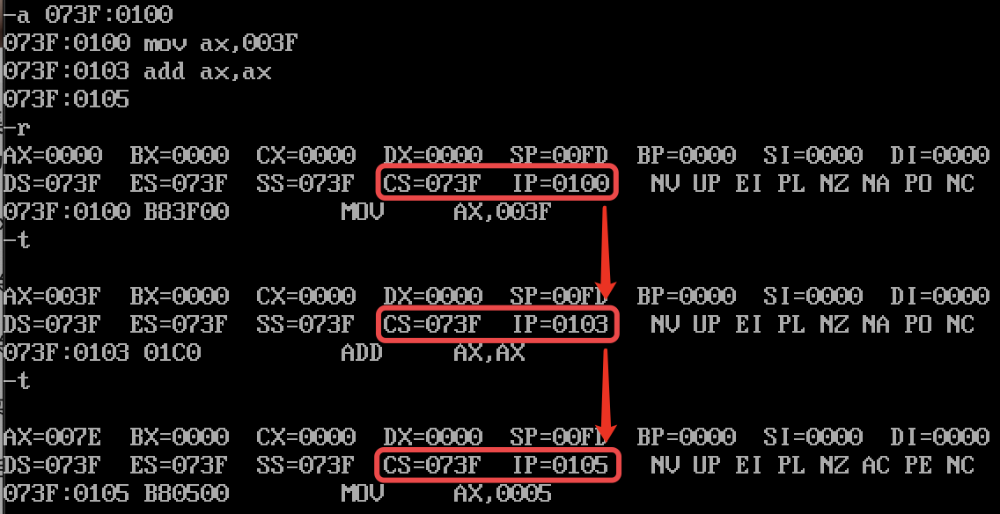
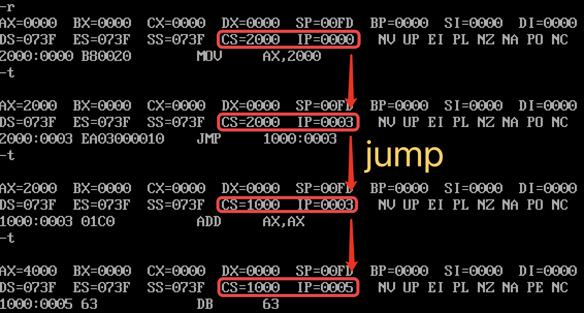
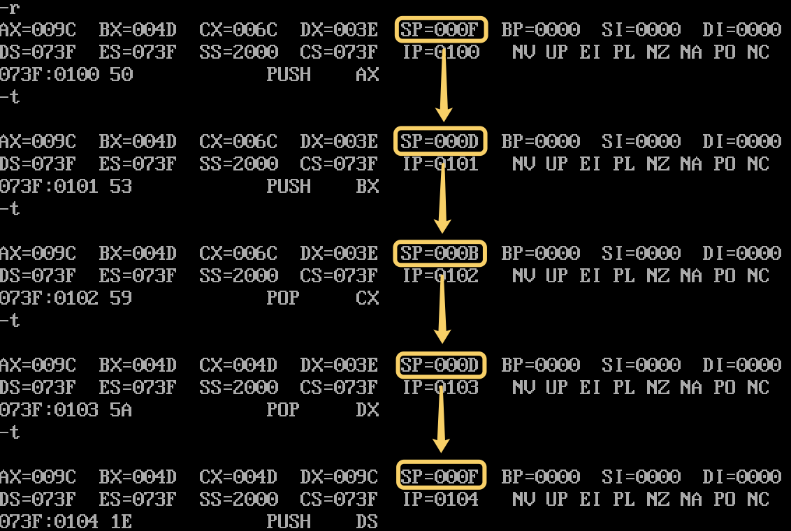
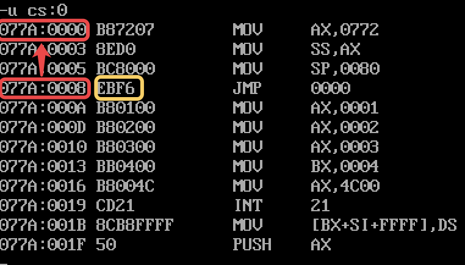

<!DOCTYPE html>
<html lang="cn">
<head>
  <meta charset="UTF-8">
<meta name="viewport" content="width=device-width, initial-scale=1, maximum-scale=2">
<meta name="theme-color" content="#222">
<meta name="generator" content="Hexo 5.3.0">
  <link rel="apple-touch-icon" sizes="180x180" href="/images/apple-touch-icon-next.png">
  <link rel="icon" type="image/png" sizes="32x32" href="/images/favicon-32x32-next.png">
  <link rel="icon" type="image/png" sizes="16x16" href="/images/favicon-16x16-next.png">
  <link rel="mask-icon" href="/images/logo.svg" color="#222">

<link rel="stylesheet" href="/css/main.css">

<link rel="stylesheet" href="https://fonts.loli.net/css?family=Noto Serif SC:300,300italic,400,400italic,700,700italic&display=swap&subset=latin,latin-ext">
<link rel="stylesheet" href="/lib/font-awesome/css/all.min.css">

<script id="hexo-configurations">
    var NexT = window.NexT || {};
    var CONFIG = {"hostname":"www.zobinhuang.com","root":"/","scheme":"Pisces","version":"7.8.0","exturl":false,"sidebar":{"position":"left","width":180,"display":"hide","padding":10,"offset":12,"onmobile":false},"copycode":{"enable":false,"show_result":true,"style":"flat"},"back2top":{"enable":true,"sidebar":true,"scrollpercent":true},"bookmark":{"enable":true,"color":"#FF4136","save":"manual"},"fancybox":false,"mediumzoom":false,"lazyload":false,"pangu":false,"comments":{"style":"tabs","active":null,"storage":true,"lazyload":false,"nav":null},"algolia":{"hits":{"per_page":10},"labels":{"input_placeholder":"Search for Posts","hits_empty":"We didn't find any results for the search: ${query}","hits_stats":"${hits} results found in ${time} ms"}},"localsearch":{"enable":false,"trigger":"auto","top_n_per_article":1,"unescape":false,"preload":false},"motion":{"enable":true,"async":false,"transition":{"post_block":"fadeIn","post_header":"slideDownIn","post_body":"slideDownIn","coll_header":"slideLeftIn","sidebar":"slideUpIn"}}};
  </script>

  <meta name="description" content="img{margin-left: 20px; margin-right: 20px;}     #table th{text-align:center;}     #table td{text-align:center;}     p{margin-left: 15px; margin-right: 15px;}     .div_concurrent_img{padding: 10p">
<meta property="og:type" content="website">
<meta property="og:title" content="CPU 是如何与内存和外围设备交互的？程序又是如何运行的？">
<meta property="og:url" content="http://www.zobinhuang.com:10082/sec_learning/Tech_OS_And_Linux_Kernel/Assembly_3_How_CPU_Execute/index.html">
<meta property="og:site_name" content="Zobin">
<meta property="og:description" content="img{margin-left: 20px; margin-right: 20px;}     #table th{text-align:center;}     #table td{text-align:center;}     p{margin-left: 15px; margin-right: 15px;}     .div_concurrent_img{padding: 10p">
<meta property="og:locale">
<meta property="og:image" content="https://i.creativecommons.org/l/by-nc-nd/4.0/88x31.png">
<meta property="og:image" content="http://www.zobinhuang.com:10082/sec_learning/Tech_OS_And_Linux_Kernel/Assembly_3_How_CPU_Execute/pic/xxx.png">
<meta property="og:image" content="http://www.zobinhuang.com:10082/sec_learning/Tech_OS_And_Linux_Kernel/Assembly_3_How_CPU_Execute/pic/segment.svg">
<meta property="og:image" content="http://www.zobinhuang.com:10082/sec_learning/Tech_OS_And_Linux_Kernel/Assembly_3_How_CPU_Execute/pic/cs_ip.png">
<meta property="og:image" content="http://www.zobinhuang.com:10082/sec_learning/Tech_OS_And_Linux_Kernel/Assembly_3_How_CPU_Execute/pic/jmp.png">
<meta property="og:image" content="http://www.zobinhuang.com:10082/sec_learning/Tech_OS_And_Linux_Kernel/Assembly_3_How_CPU_Execute/pic/little_edian.png">
<meta property="og:image" content="http://www.zobinhuang.com:10082/sec_learning/Tech_OS_And_Linux_Kernel/Assembly_3_How_CPU_Execute/pic/ds.png">
<meta property="og:image" content="http://www.zobinhuang.com:10082/sec_learning/Tech_OS_And_Linux_Kernel/Assembly_3_How_CPU_Execute/pic/ds_reverse.png">
<meta property="og:image" content="http://www.zobinhuang.com:10082/sec_learning/Tech_OS_And_Linux_Kernel/Assembly_3_How_CPU_Execute/pic/ds_bx_c_si_di.png">
<meta property="og:image" content="http://www.zobinhuang.com:10082/sec_learning/Tech_OS_And_Linux_Kernel/Assembly_3_How_CPU_Execute/pic/movsb.png">
<meta property="og:image" content="http://www.zobinhuang.com:10082/sec_learning/Tech_OS_And_Linux_Kernel/Assembly_3_How_CPU_Execute/pic/stack.png">
<meta property="og:image" content="http://www.zobinhuang.com:10082/sec_learning/Tech_OS_And_Linux_Kernel/Assembly_3_How_CPU_Execute/pic/push_pop.png">
<meta property="og:image" content="http://www.zobinhuang.com:10082/sec_learning/Tech_OS_And_Linux_Kernel/Assembly_3_How_CPU_Execute/pic/jmp_1.png">
<meta property="og:image" content="http://www.zobinhuang.com:10082/sec_learning/Tech_OS_And_Linux_Kernel/Assembly_3_How_CPU_Execute/pic/jmp_2.png">
<meta property="og:image" content="http://www.zobinhuang.com:10082/sec_learning/Tech_OS_And_Linux_Kernel/Assembly_3_How_CPU_Execute/pic/jmp_4.png">
<meta property="og:image" content="http://www.zobinhuang.com:10082/sec_learning/Tech_OS_And_Linux_Kernel/Assembly_3_How_CPU_Execute/pic/jmp_3.png">
<meta property="og:image" content="http://www.zobinhuang.com:10082/sec_learning/Tech_OS_And_Linux_Kernel/Assembly_3_How_CPU_Execute/pic/jmp_5.png">
<meta property="og:image" content="http://www.zobinhuang.com:10082/sec_learning/Tech_OS_And_Linux_Kernel/Assembly_3_How_CPU_Execute/pic/jmp_6.png">
<meta property="og:image" content="http://www.zobinhuang.com:10082/sec_learning/Tech_OS_And_Linux_Kernel/Assembly_3_How_CPU_Execute/pic/jmp_7.png">
<meta property="og:image" content="http://www.zobinhuang.com:10082/sec_learning/Tech_OS_And_Linux_Kernel/Assembly_3_How_CPU_Execute/pic/jmp_8.png">
<meta property="og:image" content="http://www.zobinhuang.com:10082/sec_learning/Tech_OS_And_Linux_Kernel/Assembly_3_How_CPU_Execute/pic/loop.png">
<meta property="og:image" content="http://www.zobinhuang.com:10082/sec_learning/Tech_OS_And_Linux_Kernel/Assembly_3_How_CPU_Execute/pic/call_1.png">
<meta property="og:image" content="http://www.zobinhuang.com:10082/sec_learning/Tech_OS_And_Linux_Kernel/Assembly_3_How_CPU_Execute/pic/retf.png">
<meta property="og:image" content="http://www.zobinhuang.com:10082/sec_learning/Tech_OS_And_Linux_Kernel/Assembly_3_How_CPU_Execute/pic/in_out.png">
<meta property="article:published_time" content="2021-09-07T12:09:27.305Z">
<meta property="article:modified_time" content="2021-09-07T12:09:27.305Z">
<meta property="article:author" content="Zhuobin Huang">
<meta property="article:tag" content="Zobin">
<meta property="article:tag" content="黄卓彬">
<meta property="article:tag" content="zobinHuang">
<meta property="article:tag" content="网络工程">
<meta property="article:tag" content="Networking Engineering">
<meta name="twitter:card" content="summary">
<meta name="twitter:image" content="https://i.creativecommons.org/l/by-nc-nd/4.0/88x31.png">

<link rel="canonical" href="http://www.zobinhuang.com:10082/sec_learning/Tech_OS_And_Linux_Kernel/Assembly_3_How_CPU_Execute/">


<script id="page-configurations">
  // https://hexo.io/docs/variables.html
  CONFIG.page = {
    sidebar: "",
    isHome : false,
    isPost : false,
    lang   : 'cn'
  };
</script>

  <title>CPU 是如何与内存和外围设备交互的？程序又是如何运行的？ | Zobin
</title>
  


  <noscript>
  <style>
  .use-motion .brand,
  .use-motion .menu-item,
  .sidebar-inner,
  .use-motion .post-block,
  .use-motion .pagination,
  .use-motion .comments,
  .use-motion .post-header,
  .use-motion .post-body,
  .use-motion .collection-header { opacity: initial; }

  .use-motion .site-title,
  .use-motion .site-subtitle {
    opacity: initial;
    top: initial;
  }

  .use-motion .logo-line-before i { left: initial; }
  .use-motion .logo-line-after i { right: initial; }
  </style>
</noscript>

<link rel="alternate" href="/atom.xml" title="Zobin" type="application/atom+xml">
</head>

<body itemscope itemtype="http://schema.org/WebPage">
  <div class="container use-motion">
    <div class="headband"></div>

    <header class="header" itemscope itemtype="http://schema.org/WPHeader">
      <div class="header-inner"><div class="site-brand-container">
  <div class="site-nav-toggle">
    <div class="toggle" aria-label="تشغيل شريط التصفح">
      <span class="toggle-line toggle-line-first"></span>
      <span class="toggle-line toggle-line-middle"></span>
      <span class="toggle-line toggle-line-last"></span>
    </div>
  </div>

  <div class="site-meta">

    <a href="/" class="brand" rel="start">
      <span class="logo-line-before"><i></i></span>
      <h1 class="site-title">Zobin</h1>
      <span class="logo-line-after"><i></i></span>
    </a>
      <p class="site-subtitle" itemprop="description">Loves Tech & Tea</p>
  </div>

  <div class="site-nav-right">
    <div class="toggle popup-trigger">
    </div>
  </div>
</div>


<nav class="site-nav">
  <ul id="menu" class="main-menu menu">
        <li class="menu-item menu-item-主页">

    <a href="/" rel="section"><i class="fa fa-home fa-fw"></i>主页</a>

  </li>
        <li class="menu-item menu-item-关于">

    <a href="/sec_about/" rel="section"><i class="fa fa-address-card fa-fw"></i>关于</a>

  </li>
        <li class="menu-item menu-item-科研-(research)">

    <a href="/sec_research/" rel="section"><i class="fa fa-atom fa-fw"></i>科研 (Research)</a>

  </li>
        <li class="menu-item menu-item-项目">

    <a href="/sec_project/" rel="section"><i class="fa fa-user-cog fa-fw"></i>项目</a>

  </li>
        <li class="menu-item menu-item-知识库">

    <a href="/sec_learning/" rel="section"><i class="fa fa-book-open fa-fw"></i>知识库</a>

  </li>
        <li class="menu-item menu-item-每周大盘">

    <a href="/sec_weekly/" rel="section"><i class="fa fa-newspaper fa-fw"></i>每周大盘</a>

  </li>
        <li class="menu-item menu-item-实习与助教">

    <a href="/sec_internship/" rel="section"><i class="fa fa-people-arrows fa-fw"></i>实习与助教</a>

  </li>
        <li class="menu-item menu-item-进度">

    <a href="/sec_schedule/" rel="section"><i class="fa fa-calendar-alt fa-fw"></i>进度</a>

  </li>
        <li class="menu-item menu-item-随笔">

    <a href="/sec_essay/" rel="section"><i class="fa fa-mug-hot fa-fw"></i>随笔</a>

  </li>
        <li class="menu-item menu-item-独立音乐人">

    <a href="/sec_music/" rel="section"><i class="fa fa-music fa-fw"></i>独立音乐人</a>

  </li>
  </ul>
</nav>


</div>
    </header>

    
  <div class="reading-progress-bar"></div>
  <a role="button" class="book-mark-link book-mark-link-fixed"></a>


    <main class="main">
      <div class="main-inner">
        <div class="content-wrap">
          
  
  

          <div class="content page posts-expand">
            

    
    
    
    <div class="post-block" lang="cn">
      <header class="post-header">

<h1 class="post-title" itemprop="name headline">CPU 是如何与内存和外围设备交互的？程序又是如何运行的？
</h1>

<div class="post-meta">
  
  <ul class="breadcrumb">
          
            <li><a href="/sec_learning/">SEC_LEARNING</a></li>
            <li><a href="/sec_learning/Tech_OS_And_Linux_Kernel/">TECH_OS_AND_LINUX_KERNEL</a></li>
          <li>ASSEMBLY_3_HOW_CPU_EXECUTE</li>
        
  </ul>

</div>

</header>

      
      
      
      <div class="post-body">
          <head>
<style>
    img{margin-left: 20px; margin-right: 20px;}
    #table th{text-align:center;}
    #table td{text-align:center;}
    p{margin-left: 15px; margin-right: 15px;}
    .div_concurrent_img{padding: 10px 10px; display: flex; align-items:center; justify-content:center;}
    @media(max-width: 768px) {
      .div_concurrent_img{flex-direction: column;}
    }
    .div_catalogue{padding: 10px 10px; font-size: 16px; background-color: #E0E0E0; word-spacing:0px;  border:1px solid black; border-radius: 10px;}
    .div_licence{font-size: 16px; word-spacing:0px; border:1px solid black;}
    .div_learning_post{font-size: 16px; word-spacing:0px;}
    .div_indicate_source{font-size: 18px; word-spacing:0px; background-color: #E0E0E0;}
    .div_learning_post_boder{padding: 10px 10px; font-size: 16px; word-spacing:0px;  border:1px solid black;}
</style>
<!--支持网页公式显示-->    
<script type="text/javascript" src="https://cdn.mathjax.org/mathjax/latest/MathJax.js?config=AM_HTMLorMML-full"></script>
</head>

<body>

<div align="center" class="div_indicate_source">
  <h4>⚠ 转载请注明出处：<font color="red"><i>作者：ZobinHuang，更新日期：July 7 2021</i></font></h4>
</div>

<div class="div_licence">
  <br>
  <div align="center">
      <a rel="license noopener" target="_blank" href="http://creativecommons.org/licenses/by-nc-nd/4.0/"></a>
  </div>
  <p>
  &nbsp;&nbsp;&nbsp;&nbsp;本<span xmlns:dct="http://purl.org/dc/terms/" href="http://purl.org/dc/dcmitype/Text" rel="dct:type">作品</span>由 <span xmlns:cc="http://creativecommons.org/ns#" property="cc:attributionName"><b>ZobinHuang</b></span> 采用 <a rel="license noopener" target="_blank" href="http://creativecommons.org/licenses/by-nc-nd/4.0/"><font color="red">知识共享署名-非商业性使用-禁止演绎 4.0 国际许可协议</font></a> 进行许可，在进行使用或分享前请查看权限要求。若发现侵权行为，会采取法律手段维护作者正当合法权益，谢谢配合。
  </p>
</div>

<!--表格-->
<!--
<table border="1" align="center" bgcolor="#FFFFFF">
  <caption>表格</caption>
  <tr>
    <th>A</th>
    <th>B</th>
    <th>C</th>
  </tr>
  <tr>
    <td>xxx</td>
    <td>xxx</td>
    <td>xxx</td>
  </tr>
</table>
-->

<!--图片-->
<!--
<div align="center">
  
</div>
-->

<!--正文-->
<!--
<p>
&nbsp;&nbsp;&nbsp;&nbsp;公式：<span>`\overline{A}\overline{B}`</span>
</p>
-->


<br>

<div class="div_catalogue">
  <div align="center">
    <h2> 目录 </h2>
    <p>
    <font size="2px">有特定需要的内容直接跳转到相关章节查看即可。</font>
  </div>
  <div class="div_learning_post_boder">
    <p>
    &nbsp;&nbsp;&nbsp;&nbsp;Section 1. <a href="#1_register"><font color="blue"><b>寄存器的本质</b></font></a>：帮助读者理解了寄存器的本质：作为汇编程序员，我们看到的寄存器就是用于控制 CPU 行为的存储单元；
    <p>
    &nbsp;&nbsp;&nbsp;&nbsp;Section 2. <a href="#2_general_reg"><font color="blue"><b>通用寄存器</b></font></a>：介绍了 Intel 8086 CPU 中的通用寄存器资源
    <p>
    &nbsp;&nbsp;&nbsp;&nbsp;Section 3. <a href="#3_mem_reg"><font color="blue"><b>用于访问内存的寄存器</b></font></a>：剖析了 CPU 访问内存所使用的分段机制，然后给出 CPU 访问内存的方法：
    <br>&nbsp;&nbsp;&nbsp;&nbsp;&nbsp;&nbsp;&nbsp;&nbsp;3.1 <a href="#3_mem_reg_1"><font color="blue">分段机制的 Motivation</font></a>：给出了 CPU 使用分段机制访问内存的历史原因和技术原因；
    <br>&nbsp;&nbsp;&nbsp;&nbsp;&nbsp;&nbsp;&nbsp;&nbsp;3.2 <a href="#3_mem_reg_2"><font color="blue">让 CPU 区分内存中的「指令」与「数据」</font></a>：介绍了供 CPU 用于访问内存中的「指令」与「数据」的寄存器；
    <br>&nbsp;&nbsp;&nbsp;&nbsp;&nbsp;&nbsp;&nbsp;&nbsp;&nbsp;&nbsp;&nbsp;&nbsp;(1) <a href="#3_mem_reg_2_1"><font color="blue">获取指令</font></a>：从 CS:IP 寄存器的角度出发，分析了 CPU 从内存中获取指令的原理和过程；
    <br>&nbsp;&nbsp;&nbsp;&nbsp;&nbsp;&nbsp;&nbsp;&nbsp;&nbsp;&nbsp;&nbsp;&nbsp;(2) <a href="#3_mem_reg_2_2"><font color="blue">获取数据</font></a>：从 DS/ES/BX/SI/DI 寄存器的角度出发，分析了 CPU 从内存中获取数据的原理和过程，同时还介绍了串传送指令；
    <br>&nbsp;&nbsp;&nbsp;&nbsp;&nbsp;&nbsp;&nbsp;&nbsp;&nbsp;&nbsp;&nbsp;&nbsp;(3) <a href="#3_mem_reg_2_3"><font color="blue">以 "栈" 的形式访问内存</font></a>：从 SS:SP/BP 寄存器的角度出发，分析了 CPU 将一段内存当作栈来使用的 Motivation，原理和过程；
    <p>
    &nbsp;&nbsp;&nbsp;&nbsp;Section 4. <a href="#4_flag_reg"><font color="blue"><b>标志位寄存器</b></font></a>：分析了寄存器组中一个比较特殊的寄存器：标志位寄存器
    <br>&nbsp;&nbsp;&nbsp;&nbsp;&nbsp;&nbsp;&nbsp;&nbsp;4.1 <a href="#4_flag_reg_1"><font color="blue">标志位寄存器</font></a>：给出了标志位寄存器中的内容，以及各个比特的具体含义
    <br>&nbsp;&nbsp;&nbsp;&nbsp;&nbsp;&nbsp;&nbsp;&nbsp;4.2 <a href="#4_flag_reg_2"><font color="blue">adc 指令</font></a>：介绍了可以用于传递加法进位的 adc 指令；
    <br>&nbsp;&nbsp;&nbsp;&nbsp;&nbsp;&nbsp;&nbsp;&nbsp;4.3 <a href="#4_flag_reg_3"><font color="blue">sbb 指令</font></a>：介绍了可以用于传递减法借位的 adc 指令；
    <br>&nbsp;&nbsp;&nbsp;&nbsp;&nbsp;&nbsp;&nbsp;&nbsp;4.4 <a href="#4_flag_reg_4"><font color="blue">cmp 指令</font></a>：介绍了可用于比较数值并且将结果呈现在标志位寄存器的 cmp 指令；
    <br>&nbsp;&nbsp;&nbsp;&nbsp;&nbsp;&nbsp;&nbsp;&nbsp;4.5 <a href="#4_flag_reg_5"><font color="blue">pushf 和 popf</font></a>：介绍了可用于将标志位寄存器压入栈中的指令；
    <p>
    &nbsp;&nbsp;&nbsp;&nbsp;Section 5. <a href="#5_transition"><font color="blue"><b>转移指令</b></font></a>：介绍了强大且有用的转移指令
    <br>&nbsp;&nbsp;&nbsp;&nbsp;&nbsp;&nbsp;&nbsp;&nbsp;5.1 <a href="#5_transition_1"><font color="blue">jmp 无条件跳转指令</font></a>：介绍了无条件转移指令 jmp 的原理、转移过程和转移类型等；
    <br>&nbsp;&nbsp;&nbsp;&nbsp;&nbsp;&nbsp;&nbsp;&nbsp;&nbsp;&nbsp;&nbsp;&nbsp;(1) <a href="#5_transition_1_1"><font color="blue">jmp 跳转的原理</font></a>：通过分析 jmp 指令编译后的机器码解释了 jmp 的转移实质；
    <br>&nbsp;&nbsp;&nbsp;&nbsp;&nbsp;&nbsp;&nbsp;&nbsp;&nbsp;&nbsp;&nbsp;&nbsp;(2) <a href="#5_transition_1_2"><font color="blue">跳转范围</font></a>：分析了 jmp 跳转指令能够实现的跳转范围；
    <br>&nbsp;&nbsp;&nbsp;&nbsp;&nbsp;&nbsp;&nbsp;&nbsp;&nbsp;&nbsp;&nbsp;&nbsp;(3) <a href="#5_transition_1_3"><font color="blue">段间转移 (远转移)</font></a>：分析了使用 jmp 指令进行跨段转移的原理和方法；
    <br>&nbsp;&nbsp;&nbsp;&nbsp;&nbsp;&nbsp;&nbsp;&nbsp;&nbsp;&nbsp;&nbsp;&nbsp;(4) <a href="#5_transition_1_4"><font color="blue">转移地址在内存、寄存器中的 jmp 指令</font></a>：分析了把 jmp 指令的操作数存储在寄存器/内存中的情况；
    <br>&nbsp;&nbsp;&nbsp;&nbsp;&nbsp;&nbsp;&nbsp;&nbsp;5.2 <a href="#5_transition_2"><font color="blue">jcxz 条件跳转指令</font></a>：分析了 jcxz 条件转移指令；
    <br>&nbsp;&nbsp;&nbsp;&nbsp;&nbsp;&nbsp;&nbsp;&nbsp;5.3 <a href="#5_transition_3"><font color="blue">loop 条件跳转指令</font></a>：分析了 loop 条件转移指令；
    <br>&nbsp;&nbsp;&nbsp;&nbsp;&nbsp;&nbsp;&nbsp;&nbsp;5.4 <a href="#5_transition_4"><font color="blue">call 指令</font></a>：分析了 call 条件转移指令，可以帮助实现 "函数调用" 的功能；
    <br>&nbsp;&nbsp;&nbsp;&nbsp;&nbsp;&nbsp;&nbsp;&nbsp;&nbsp;&nbsp;&nbsp;&nbsp;(1) <a href="#5_transition_4_1"><font color="blue">call 指令的运行流程</font></a>：分析了 call 指令背后的运行流程
    <br>&nbsp;&nbsp;&nbsp;&nbsp;&nbsp;&nbsp;&nbsp;&nbsp;&nbsp;&nbsp;&nbsp;&nbsp;(2) <a href="#5_transition_4_2"><font color="blue">call 跳转地址在 内存 和 寄存器 中的情况</font></a>：分析了把 call 指令的操作数存储在寄存器/内存中的情况；
    <br>&nbsp;&nbsp;&nbsp;&nbsp;&nbsp;&nbsp;&nbsp;&nbsp;&nbsp;&nbsp;&nbsp;&nbsp;(3) <a href="#5_transition_4_3"><font color="blue">call 和 ret/retf 指令的配合使用</font></a>：分析了 ret/retf 指令的原理和使用方法，阐述了可以将 call 和 ret/retf 指令搭配使用，实现 "函数调用" 和 "函数返回" 的功能；
    <br>&nbsp;&nbsp;&nbsp;&nbsp;&nbsp;&nbsp;&nbsp;&nbsp;&nbsp;&nbsp;&nbsp;&nbsp;(4) <a href="#5_transition_4_4"><font color="blue">寄存器旧值保护</font></a>：阐述了在进行 call 调用的时候对寄存器进行压栈保护 和在进行 ret/retf 的时候对寄存器进行出栈恢复的必要性；
    <br>&nbsp;&nbsp;&nbsp;&nbsp;&nbsp;&nbsp;&nbsp;&nbsp;5.5 <a href="#5_transition_5"><font color="blue">基于标志位寄存器的条件转移指令</font></a>：详细介绍了基于标志位寄存器结果的条件转移指令；
    <p>
    &nbsp;&nbsp;&nbsp;&nbsp;Section 6. <a href="#6_div"><font color="blue"><b>如何在汇编中完成除法操作？</b></font></a>：介绍了 Intel 8086 是如何完成除法操作的；
    <p>
    &nbsp;&nbsp;&nbsp;&nbsp;Section 7. <a href="#7_mul"><font color="blue"><b>如何在汇编中完成乘法操作？</b></font></a>：介绍了 Intel 8086 是如何完成乘法操作的；
    <p>
    &nbsp;&nbsp;&nbsp;&nbsp;Section 8. <a href="#8_reg_summary"><font color="blue"><b>寄存器小结</b></font></a>：小结了 Intel 8086 CPU 中的大部分寄存器
    <p>
    &nbsp;&nbsp;&nbsp;&nbsp;Section 9. <a href="#9_port"><font color="blue"><b>8086 CPU 如何访问 I/O 设备？</b></font></a>：介绍了 8086 CPU 访问外围设备的技术原理：
    <br>&nbsp;&nbsp;&nbsp;&nbsp;&nbsp;&nbsp;&nbsp;&nbsp;9.1 <a href="#9_port_1"><font color="blue">端口</font></a>：阐述了 Intel 处理器的端口的概念；
    <br>&nbsp;&nbsp;&nbsp;&nbsp;&nbsp;&nbsp;&nbsp;&nbsp;9.2 <a href="#9_port_2"><font color="blue">端口的读写过程</font></a>：解释了 8086 CPU 对端口进行读写的原理和过程；
    <br>&nbsp;&nbsp;&nbsp;&nbsp;&nbsp;&nbsp;&nbsp;&nbsp;9.3 <a href="#9_port_3"><font color="blue">实例：使用 8086 CPU 读取 CMOS RAM</font></a>通过 8086 CPU 访问 CMOS RAM 作为例子来理解它是如何访问外围 I/O 设备的；
  </div>
</div>


<!--标题-->
<h2><a name="1_register">1. 寄存器的本质</a></h2>
<div class="div_learning_post">
  <p>
  &nbsp;&nbsp;&nbsp;&nbsp;在上一篇文章中我们看到了 MMIO 和 PMIO 这两种管理系统内存空间的方法，但是可能有读者会疑惑：CPU 会将它内部的寄存器拉到地址空间去编址吗？答案是不会的，因为寄存器本身就在 CPU 内部，CPU 不需要通过地址总线的方式来访问这些寄存器。寄存器本身作为一种存储器，本质上和 CPU 外部的存储器发挥着不同的作用，可以这么去看待寄存器：程序员的最终目的是在各个时刻管理这些寄存器中的数据，以实现对 CPU 的行为进行控制。因此，我们分析汇编程序的本质就是在分析程序是如何操纵 CPU 寄存器的。

  <p>
  &nbsp;&nbsp;&nbsp;&nbsp;在本篇文章中，我们将学习：我们是如何通过管理各个寄存器的数据来控制 CPU 的行为的。
</div>

<h2><a name="2_general_reg">2. 通用寄存器</a></h2>
<div class="div_learning_post">
  <p>
  &nbsp;&nbsp;&nbsp;&nbsp;在 8086 中有四个通用的 16-bits 寄存器：<span>`AX`</span>, <span>`BX`</span>, <span>`CX`</span>, <span>`DX`</span>。通用二字说明大部分时间没有特殊的作用，可以供我们存储数据使用。它们分别有可以被拆分为两个 8-bits 寄存器，即：
  <ul>
    <li><span>`AX = AH+AL`</span></li>
    <li><span>`BX = BH+BL`</span></li>
    <li><span>`CX = CH+CL`</span></li>
    <li><span>`DX = DH+DL`</span></li>
  </ul>

  <p>
  &nbsp;&nbsp;&nbsp;&nbsp;世界上最基础的操作寄存器的基础命令如下：

  <figure class="highlight x86asm"><table><tr><td class="gutter"><pre><span class="line">1</span><br><span class="line">2</span><br><span class="line">3</span><br><span class="line">4</span><br><span class="line">5</span><br><span class="line">6</span><br><span class="line">7</span><br><span class="line">8</span><br></pre></td><td class="code"><pre><span class="line"><span class="comment">; 把 BX 中的值与 AX 的值相加并存放于 AX 中</span></span><br><span class="line"><span class="keyword">add</span> <span class="built_in">ax</span>, <span class="built_in">bx</span></span><br><span class="line"></span><br><span class="line"><span class="comment">; AX 中的值减去 BX 中的值，然后结果存放于 AX 中</span></span><br><span class="line"><span class="keyword">sub</span> <span class="built_in">ax</span>,<span class="built_in">bx</span></span><br><span class="line"></span><br><span class="line"><span class="comment">; 把 BX 中的值赋到 AX 中</span></span><br><span class="line"><span class="keyword">mov</span> <span class="built_in">ax</span>, <span class="built_in">bx</span></span><br></pre></td></tr></table></figure>
  <p>
  &nbsp;&nbsp;&nbsp;&nbsp;有以下几个值得注意的点：

  <ul>
    <li>使用 "add", "mov" 命令操作寄存器时，注意操作数和被操作数的位数必须保持一致！</li>
    <li>寄存器之间是相互独立的，比如 "add" 命令操作过后若在 AL 上产生了一个超过 8-bits 的结果，溢出的结果不会影响 AH，该结果会被截断放在 AL 上</li>
  </ul>
</div>


<h2><a name="3_mem_reg">3. 用于访问内存的寄存器</a></h2>
<div class="div_learning_post">
  <h3><a name="3_mem_reg_1">3.1 分段机制的 Motivation</a></h3>
  <p>
  &nbsp;&nbsp;&nbsp;&nbsp;为了理解一些具有特殊功能的，用于帮助 CPU 访问内存的寄存器，我们首先来学习一下，CPU 是如何看待内存的。

  <p>
  &nbsp;&nbsp;&nbsp;&nbsp;由于 8086 CPU 在物理设计上有 20 根地址线 (i.e. 最大 <span>`2^20 = 1MB`</span> 的寻址空间)，但是 CPU 内部的寄存器的最大位数只有 16 位，而用于寻址的寄存器的宽度决定了寻址能力，所以必须设计一种机制来使得 8086 CPU 拥有 1M 的寻址能力，这就有了分段机制。

   <div align="center">
    
  </div>

  <p>
  &nbsp;&nbsp;&nbsp;&nbsp;<font color="blue">段 (Segment)</font> 可以理解为：<font color="blue">若干连续内存单元的集合</font>。分段机制从来就不是内存的特性，而是 CPU 看待内存的一种方式。我们在上一篇文章中讲到了，内存是按字节寻址的，只要把地址送上地址总线，内存控制器就能从对应的内存单元中读/写数据。因此，内存本身是不分段的。然而，对于只有 16-bits 的 8086 CPU 来说，让它拥有按字节访问 20-bits 地址宽度的内存似乎是不可能的。为了实现这个功能，Intel 的工程师设计了一种看待内存空间的角度：首先将内存进行切分，分为若干 "段"，每个段的长度不超过 `2^16` = 64KB，这样 CPU 就能够使用一个 16-bits 的寄存器来定位某一个段中的内存单元的序号，我们称之为 <font color="blue">段内偏移地址</font>；然后，我们可以再使用一个 16-bits 的寄存器，用于定位各个段的起始地址在内存中的位置，我们称之为 <font color="blue">段基地址</font>。

  <p>
  &nbsp;&nbsp;&nbsp;&nbsp;读者这时候会问了：内存的地址线宽度不是 20-bits 吗？怎么能使用一个 16-bits 的寄存器来存储 20-bits 的段起始位置呢？这是因为<font color="red">段基地址是 16 字节对齐的</font>，也就是说我们规定从 0x00000 开始，每隔 16 字节的内存单元才能够作为一个段的起始位置，这就使得一个段的起始位置的地址的低 4-bits 总是为 0。因此，对于各个段的起始地址，我们可以不记录低 4 bits 的信息，我们只要记录高 16 bits 的信息就可以了。在最终形成实际物理地址的时候，我们只需要把这个 16-bits 数左移 4 位 （i.e. 乘以 0x10），就能够得到实际的段的起始地址，我们在下面将会看到这样的操作。

  <p>
  &nbsp;&nbsp;&nbsp;&nbsp;因此现在我们明白了，分段机制一开始是为了能够让 16-bits 的 CPU 去访问更大的内存设计的，并且我们通过上面的图发现，对于内存中同一个内存单元的定位方法，可以是灵活多变的。在上面的例子中，为了定位地址为 0x50F09 的内存单元，我们既可以用 0x50F00+0x09 的方法，也可以用 0x50A00+0x0509 的方法。这种管理内存的方法实际上也是十分合理的，因此即使后来我们的 CPU 位数提高到了 32/64 bits，我们的 CPU 仍然沿用了分段的方式来访问内存，一方面是为了兼容性，另一方面也是为了更好地管理内存中的数据。

  <p>
  &nbsp;&nbsp;&nbsp;&nbsp;基于上述的原理，工程师们在 8086 内部设计了一个地址加法器，使得最终被送上地址总线的 20-bits 物理地址可以使用下面的方式被计算出来：

  <div align="center">
  <font color="red">
    物理地址 = 段起始地址 <span>`*`</span> 16(10H) + 偏移地址
  </font>
  </div>

  <h3><a name="3_mem_reg_2">3.2 让 CPU 区分内存中的「指令」与「数据」</a></h3>
  <p>
  &nbsp;&nbsp;&nbsp;&nbsp;有了对分段机制的理解，现在，我们就能开始分析 CPU 和内存交互的指令及其背后的原理了！在内存中，不论是指令还是数据，都是以字节为单元的二进制信息进行存储，并没有区别。然而对于 CPU 来说必须在区分出两者的区别。为了让 CPU 能够基于存储在内存某个位置中的指令运行起来，并且对存储在内存某个位置中的数据进行操作， 8086 使用了如下的方法。

  <h5><a name="3_mem_reg_2_1">(1) 获取指令</a></h5>
  <p>
  &nbsp;&nbsp;&nbsp;&nbsp;为了从内存中获取「指令」，8086 CPU 把 <b><font color="red">CS</font></b>(Code Segment): <b><font color="red">IP</font></b>(Instrucment Pointer) 这两个 16-bits 寄存器指向的内存单元当作获取到的指令。注意到 CS 就是用于存储段基地址的寄存器，IP 就是用于存储段内偏移地址的寄存器。CPU 取指令的整体的流程如下：
  <ol>
    <li>CPU 从 CS:IP 指向的内存单元中读取指令，存放到指令缓存器中</li>
    <li>IP = IP+所读指令长度，从而指向下一条指令</li>
    <li>CPU 执行指令缓存器中的内容，回到第一步</li>
  </ol>

  <p>
  &nbsp;&nbsp;&nbsp;&nbsp;我们在 DosBox 中可以观察到 CPU 执行指令前后 CS:IP 寄存器的变化情况：

  <div align="center">
    
  </div>

  <p>
  &nbsp;&nbsp;&nbsp;&nbsp;注意！8086 CPU 不允许我们使用 mov 命令来修改 CS:IP 中的值。

  <p>
  &nbsp;&nbsp;&nbsp;&nbsp;另外，如果在运行指令的过程中遇到了 "jmp" 指令等转移指令，则 CS:IP 会被 jmp 指令后面的操作数所配置，以实现指令的跳转功能。我们在后面介绍转移指令的时候会详细介绍 jmp 指令的运行过程。

  <p>
  &nbsp;&nbsp;&nbsp;&nbsp;"jmp" 指令的效果如下图所示：
  <div align="center">
    
  </div>

  <h5><a name="3_mem_reg_2_2">(2) 获取数据</a></h5>
  <p>
  &nbsp;&nbsp;&nbsp;&nbsp;首先，我们必须知道，在内存中，数据和指令一样，也是按照以字节为单位的二进制信息存储的。对于 8086 CPU 来说，其看待内存中的字型数据 (16-bits)的顺序是：<font color="red">高地址存放高字节，低地址存放低字节</font>，即<b>小端模式</b>。例子如下所示：

  <div align="center">
    
  </div>

  <p>
  &nbsp;&nbsp;&nbsp;&nbsp;8086 CPU 使用 <font color="blue">DS(Data Segment)</font> 寄存器用于指示内存中的数据内容的段基地址，我们在汇编指令中只需要使用形如 "mov ax, ds:[0010]" 的指令，就可以将 DS:0010 处的数据读取到 AX 寄存器中。例子如下图所示：

  <div align="center">
    
  </div>

  <p>
  &nbsp;&nbsp;&nbsp;&nbsp;反过来，我们也可以使用形如 "mov ds:[0010], ax" 的指令，把 AX 寄存器中的值赋给 DS:0010 指向的内存单元中。 如下图所示：

  <div align="center">
    
  </div>

  <p>
  &nbsp;&nbsp;&nbsp;&nbsp;另外值得注意的是，8086 CPU 同样不支持直接使用 "mov" 指令直接修改 DS 寄存器中的值，我们必须采用间接的方法 (e.g. mov ds, ax) 来对其进行赋值。这些禁忌都是由于硬件设计造成的，我们在这里不做过多解释。

  <p>
  &nbsp;&nbsp;&nbsp;&nbsp;在日常的使用中，我们经常会把寄存器 BX 当作偏移地址寄存器，通过把偏移地址写入 BX 寄存器，然后使用形如 "mov ds:[bx], ax" 等形式来访问内存中的数据。另外，SI/DI 寄存器也可以供我们用于访问 DS 所指示的数据段内存，如 "mov ax, ds:[bx+si]", "mov ds:[bx+di], ax", "mov ax, ds:[bx+8]", "mov bx, ds:[bx+si+8]" 这样的内存访问形式都是允许的。

  <div align="center">
    
  </div>

  <p>
  &nbsp;&nbsp;&nbsp;&nbsp;读者可能会有疑惑，为什么要这么复杂地去定位内存呢？上图应该能解答这个疑惑：DS 寄存器用于锁定是哪个段，BX 寄存器用于在段内再锁定一个可变的起始位置，常数用于在段内再锁定一个常数的起始位置，SI/DI 用于设置基于段内起始位置的可变的偏移量。这里实际上是体现了偏移的思想。<font color="red">我们在写汇编程序的时候，最重要的一件事情就是去观察数据在内存中的分布情况，然后选择一种合适的访问内存的方式去操作数据。</font>因此我们可以用十分灵活的方式去访问我们在内存中的数据。


  <p>
  &nbsp;&nbsp;&nbsp;&nbsp;在 8086 CPU 中，ES 寄存器有着和 DS 寄存器一样的功能，即指向内存中存储数据的段的基地址。在日常的使用过程中，我们通常让 DS 寄存器指向我们数据来源的段基地址，让 ES 寄存器指向我们数据去向的段基地址，从而实现数据的 "取 -> 处理 -> 存" 的过程。我们在下面将要介绍串传送指令，读者将能马上理解这样的过程。

  <p>
  &nbsp;&nbsp;&nbsp;&nbsp;我们现在来介绍一下 <font color="blue">串传送指令</font>。在介绍之前，我们先来聊一下在 8086 CPU 中的一个特殊的寄存器 —— 标志位寄存器，我们将在下面的 <a href="#4_flag_reg">标志位寄存器</a> 一章中详细描述，我们这里先简单了解一下。在这个寄存器中，有一个比特，我们叫它 <font color="blue">DF (Direction Flag)</font>，它可以被人为设为 1，也可以被设 为 0。控制 DF 标志位寄存器的指令是： <font color="blue">cld</font> 设置 DF 为 0，<font color="blue">std</font> 设置 DF 为 1。这样的设置有什么作用，请看下面。

  <p>
  &nbsp;&nbsp;&nbsp;&nbsp;串传送指令 <font color="blue">movsb</font> 的功能是把 DS:[SI] 处的值复制到 ES:[DI] 中，然后当 DF = 0 时令 SI = SI + 1 和 DI = DI + 1，当 DF = 1 时令 SI = SI - 1 和 DI = DI - 1。可以发现，DF 寄存器就是用于控制 movsb 指令在内存中拷贝指令的方向的。读者会发现，movsb 一次只能拷贝一个字节。我们还有 <font color="blue">movsw</font> 指令，可以用于一次拷贝两个字节，相应地，SI 和 DI 寄存器在每次拷贝的时候就会变成递增/递减 2 个单位了。

  <p>
  &nbsp;&nbsp;&nbsp;&nbsp;然后我们再介绍 <font color="blue">rep</font> 指令，其功能室循环执行其后面跟随的指令，循环的次数和 loop 指令(我们在下面介绍转移指令的时候将介绍 loop 指令) 一样由 CX 寄存器决定。这样一来 rep movsb 指令就可以被理解为将 DS:[SI] 处的若干数据，复制到 ES:[DI] 中去，复制的数据的方向由 DF 标志位寄存器来决定。当 DF 为 0 时，复制的数据方向是 SI, DI 自增的方向；当 DF 为 1 时，复制的数据方向是 SI, DI 自减的方向。

  <p>
  &nbsp;&nbsp;&nbsp;&nbsp;我们现在通过下面的例子来理解一下 movsb 指令的执行过程：

  <figure class="highlight x86asm"><table><tr><td class="gutter"><pre><span class="line">1</span><br><span class="line">2</span><br><span class="line">3</span><br><span class="line">4</span><br><span class="line">5</span><br><span class="line">6</span><br><span class="line">7</span><br><span class="line">8</span><br><span class="line">9</span><br><span class="line">10</span><br><span class="line">11</span><br><span class="line">12</span><br><span class="line">13</span><br><span class="line">14</span><br><span class="line">15</span><br><span class="line">16</span><br><span class="line">17</span><br><span class="line">18</span><br><span class="line">19</span><br><span class="line">20</span><br><span class="line">21</span><br><span class="line">22</span><br><span class="line">23</span><br><span class="line">24</span><br><span class="line">25</span><br><span class="line">26</span><br><span class="line">27</span><br><span class="line">28</span><br><span class="line">29</span><br><span class="line">30</span><br><span class="line">31</span><br><span class="line">32</span><br><span class="line">33</span><br><span class="line">34</span><br><span class="line">35</span><br><span class="line">36</span><br><span class="line">37</span><br><span class="line">38</span><br><span class="line">39</span><br><span class="line">40</span><br><span class="line">41</span><br><span class="line">42</span><br><span class="line">43</span><br><span class="line">44</span><br><span class="line">45</span><br><span class="line">46</span><br><span class="line">47</span><br><span class="line">48</span><br><span class="line">49</span><br></pre></td><td class="code"><pre><span class="line"><span class="symbol">start:</span>          <span class="comment">; 如果你不理解 call 指令，你可以理解为它有函数调用的功能</span></span><br><span class="line">                <span class="keyword">call</span> init_reg</span><br><span class="line">                </span><br><span class="line">                <span class="keyword">call</span> cpy_data</span><br><span class="line"></span><br><span class="line">                <span class="keyword">mov</span> <span class="built_in">ax</span>, <span class="number">4C00H</span></span><br><span class="line">                <span class="keyword">int</span> <span class="number">21H</span></span><br><span class="line"></span><br><span class="line"><span class="comment">;================================================</span></span><br><span class="line"><span class="symbol">ex_code:</span>        <span class="keyword">mov</span> <span class="built_in">ax</span>, <span class="number">1000H</span></span><br><span class="line">                <span class="keyword">mov</span> <span class="built_in">ax</span>, <span class="number">1000H</span></span><br><span class="line">                <span class="keyword">mov</span> <span class="built_in">ax</span>, <span class="number">1000H</span></span><br><span class="line">                <span class="keyword">mov</span> <span class="built_in">ax</span>, <span class="number">1000H</span></span><br><span class="line"><span class="symbol">ex_code_end:</span>    <span class="keyword">nop</span></span><br><span class="line"></span><br><span class="line"><span class="comment">;================================================</span></span><br><span class="line"><span class="symbol">cpy_data:</span>       <span class="keyword">mov</span> <span class="built_in">bx</span>, <span class="built_in">cs</span></span><br><span class="line">                <span class="keyword">mov</span> <span class="built_in">ds</span>, <span class="built_in">bx</span></span><br><span class="line"></span><br><span class="line">                <span class="comment">; OFFSET 是 MASM 编译器的一个伪指令</span></span><br><span class="line">                <span class="comment">; 用于让编译器计算出跟在 OFFSET 后标号在段内的偏移量</span></span><br><span class="line">                <span class="comment">; 这里用于设置 SI 寄存器为数据拷贝的源地址</span></span><br><span class="line">                <span class="keyword">mov</span> <span class="built_in">si</span>, OFFSET ex_code</span><br><span class="line"></span><br><span class="line">                <span class="keyword">mov</span> <span class="built_in">bx</span>, <span class="number">0</span></span><br><span class="line">                <span class="keyword">mov</span> <span class="built_in">es</span>, <span class="built_in">bx</span></span><br><span class="line">                <span class="keyword">mov</span> <span class="built_in">di</span>, <span class="number">7E80H</span></span><br><span class="line"></span><br><span class="line">                <span class="comment">; OFFSET 是 MASM 编译器的一个伪指令</span></span><br><span class="line">                <span class="comment">; 用于让编译器计算出跟在 OFFSET 后标号在段内的偏移量</span></span><br><span class="line">                <span class="comment">; 这里用于设置 rep 的重复次数</span></span><br><span class="line">                <span class="keyword">mov</span> <span class="built_in">cx</span>, OFFSET ex_code_end-ex_code</span><br><span class="line">                <span class="keyword">cld</span></span><br><span class="line">                <span class="keyword">rep</span> <span class="keyword">movsb</span></span><br><span class="line">                </span><br><span class="line">                <span class="comment">; ret 指令的作用你可以理解为函数返回的功能</span></span><br><span class="line">                <span class="keyword">ret</span></span><br><span class="line"></span><br><span class="line"><span class="comment">;================================================</span></span><br><span class="line"><span class="symbol">init_reg:</span>   <span class="comment">; 设置数据段</span></span><br><span class="line">            <span class="keyword">mov</span> <span class="built_in">ax</span>, data</span><br><span class="line">            <span class="keyword">mov</span> <span class="built_in">ds</span>, <span class="built_in">ax</span></span><br><span class="line">            </span><br><span class="line">            <span class="comment">; 设置显存区域位置</span></span><br><span class="line">            <span class="keyword">mov</span> <span class="built_in">bx</span>, <span class="number">0B800H</span></span><br><span class="line">            <span class="keyword">mov</span> <span class="built_in">es</span>, <span class="built_in">bx</span></span><br><span class="line"></span><br><span class="line">            <span class="comment">; ret 指令的作用你可以理解为函数返回的功能</span></span><br><span class="line">            <span class="keyword">ret</span></span><br></pre></td></tr></table></figure>
  <p>
  &nbsp;&nbsp;&nbsp;&nbsp;下面是我们观测到的程序运行过程中，SI 寄存器和 DI 寄存器的递增过程，以及循环寄存器 CX 的递减的过程。当 CX 寄存器为 0 时，循环就结束了。在这个过程中，我们看到 DF 寄存器的状态是 UP 状态，与 SI 和 DI 的递增方向一致。

  <div align="center">
    
  </div>

  <h5><a name="3_mem_reg_2_3">(3) 以 "栈" 的形式访问内存</a></h5>

  <div align="center">
    
  </div>

  <p>
  &nbsp;&nbsp;&nbsp;&nbsp;栈对于编写来说是十分重要的一种数据结构，我们在后面的编程中会看到 "先入后出" 的数据流向是多么的重要。因此，8086 CPU 提供了一些寄存器组使得我们能够以栈的方式去访问某段内存。

  <p>
  &nbsp;&nbsp;&nbsp;&nbsp;在任意时刻，8086 CPU 将 <b><font color="red">SS(Stack Segment)</font></b> 和 <b><font color="red">SP(Stack Pointer)</font></b> 寄存器所指向的内存单元当作栈顶标记，其中 SS 寄存器是栈段基地址寄存器，SP 是栈段内偏移地址寄存器，出栈和入栈的操作都基于这个栈顶标记来进行。注意出栈和入栈操作仅可对字型数据进行操作(i.e. 一次性 2 个字节)。栈顶标记的移动过程可以用上图来说明，黄色部分是我们想要以栈的形式访问的内存，蓝色线条是栈顶标记的移动过程，栈是从高地址向低地址增长的，其过程如下所述：

  <p>
  &nbsp;&nbsp;&nbsp;&nbsp;<b>对于入栈指令 "push ax"</b>：
  <ol>
    <li>移动栈顶指针：修改 SP 寄存器中的数值为 SP = SP-2</li>
    <li>将 AX 中的字型数据，存放到 SS:SP 所指向的内存单元中</li>
  </ol>

  <p>
  &nbsp;&nbsp;&nbsp;&nbsp;<b>对于出栈指令 "pop ax"</b>：
  <ol>
    <li>将 SS:SP 所指向的内存单元中的数据存放到 AX 寄存器中</li>
    <li>移动栈顶指针：修改 SP 寄存器中的数值为 SP = SP+2</li> 
  </ol>

  <p>
  &nbsp;&nbsp;&nbsp;&nbsp;"push" 和 "pop" 指令导致的 SS:SP 具体的变化过程如下所示：

  <div align="center">
    
  </div>

  <p>
  &nbsp;&nbsp;&nbsp;&nbsp;值得注意的是 "push" 和 "pop" 操作都是有可能导致栈访问越界的，因此我们在对栈进行操作的时候应该十分小心。

  <p>
  &nbsp;&nbsp;&nbsp;&nbsp;栈的应用有很多，其中一个最关键的就是可以用于临时保存变量，思考下面一个嵌套循环的例子，为了实现双重循环，必须临时保存存储循环次数的寄存器 CX 的值：

  <figure class="highlight x86asm"><table><tr><td class="gutter"><pre><span class="line">1</span><br><span class="line">2</span><br><span class="line">3</span><br><span class="line">4</span><br><span class="line">5</span><br><span class="line">6</span><br><span class="line">7</span><br><span class="line">8</span><br><span class="line">9</span><br><span class="line">10</span><br><span class="line">11</span><br><span class="line">12</span><br><span class="line">13</span><br><span class="line">14</span><br></pre></td><td class="code"><pre><span class="line"><span class="comment">; if interested: 这段代码实际上完成了将一个多行 ASCII 数据中每行的前 4 个字母转化为大写字母的功能</span></span><br><span class="line"><span class="symbol">up_row:</span>     <span class="keyword">push</span> <span class="built_in">cx</span></span><br><span class="line">            <span class="keyword">mov</span> <span class="built_in">cx</span>, <span class="number">4</span></span><br><span class="line">            <span class="keyword">mov</span> <span class="built_in">si</span>, <span class="number">0</span></span><br><span class="line"></span><br><span class="line"><span class="symbol">up_letter:</span>  <span class="keyword">mov</span> <span class="built_in">al</span>, <span class="built_in">ds</span>:[<span class="built_in">bx</span>+<span class="built_in">si</span>]</span><br><span class="line">            <span class="keyword">and</span> <span class="built_in">al</span>, <span class="number">1101111B</span></span><br><span class="line">            <span class="keyword">mov</span> <span class="built_in">ds</span>:[<span class="built_in">bx</span>+<span class="number">3</span>+<span class="built_in">si</span>], <span class="built_in">al</span></span><br><span class="line">            <span class="keyword">inc</span> <span class="built_in">si</span></span><br><span class="line">            <span class="keyword">loop</span> up_letter</span><br><span class="line"></span><br><span class="line">            <span class="keyword">pop</span> <span class="built_in">cx</span></span><br><span class="line">            <span class="keyword">add</span> <span class="built_in">bx</span>, <span class="number">16</span></span><br><span class="line">            <span class="keyword">loop</span> up_row</span><br></pre></td></tr></table></figure>
  <p>
  &nbsp;&nbsp;&nbsp;&nbsp;另外，还有一个寄存器 <b><font color="red">BP(Base Pointer)</font></b>，它经常被用于遍历栈中的数据。我们知道 SS 和 SP 寄存器是不能被随意修改的，因为它们决定了栈顶指针的位置。因此当我们要遍历栈中的数据时，我们可以 mov bp, sp 之后，使用 BP 来作位移遍历栈中的数据。

</div>

<h2><a name="4_flag_reg">4. 标志位寄存器</a></h2>
<div class="div_learning_post">
  <h3><a name="4_flag_reg_1">4.1 标志位寄存器</a></h3>
  <table border="1" align="center" bgcolor="#FFFFFF">
    <tr>
      <th>bit 序号</th>
      <th>F</th>
      <th>E</th>
      <th>D</th>
      <th>C</th>
      <th>B</th>
      <th>A</th>
      <th>9</th>
      <th>8</th>
      <th>7</th>
      <th>6</th>
      <th>5</th>
      <th>4</th>
      <th>3</th>
      <th>2</th>
      <th>1</th>
      <th>0</th>
    </tr>
    <tr>
      <td>寄存器位</td>
      <td> </td>
      <td> </td>
      <td> </td>
      <td> </td>
      <td>OF</td>
      <td>DF</td>
      <td>IF</td>
      <td>TF</td>
      <td>SF</td>
      <td>ZF</td>
      <td> </td>
      <td>AF</td>
      <td> </td>
      <td>PF</td>
      <td> </td>
      <td>CF</td>
    </tr>
  </table>

  <p>
  &nbsp;&nbsp;&nbsp;&nbsp;在 8086 CPU 中，有一个特殊的 16-bits 寄存器：<font color="blue">标志位寄存器</font>。标志位寄存器中的某些位有特殊的含义，如上所示，它们主要是用于给出一些<font color="red">针对计算指令 (e.g. add, sub. div, mul)</font> 的信号，每当 CPU 执行完一条指令，这个寄存器中的各个比特位就会被更新。对于这些标志比特，我们列举如下所示：

  <table border="1" align="center" bgcolor="#FFFFFF">
    <tr>
      <th>标志位寄存器位</th>
      <th>真值</th>
      <th>假值</th>
      <th width=38%>含义</th>
    </tr>
    <tr>
      <td>CF<br>(Carry Flag 进位标志位)</td>
      <td>CY<br>(Carry Yes)</td>
      <td>NC<br>(Not Carry)</td>
      <td>
      CF 把运算结果都当作 <font color="blue"><b>无符号数</b></font>，它会记录运算结果的最高有效位向更高位的进位值 (add)，或者从更高位的借位值 (sub)
      </td>
    </tr>
    <tr>
      <td>ZF<br>(Zero Flag 零标志位)</td>
      <td>ZR<br>(Zero)</td>
      <td>NZ<br>(Not Zero)</td>
      <td>
      ZF 用于记录相关运算指令执行之后，其结果是否为 0 的标志
      </td>
    </tr>
    <tr>
      <td>PF<br>(Parity Flag 奇偶标志位)</td>
      <td>PE<br>(Parity Even)</td>
      <td>PO<br>(Parity Odd)</td>
      <td>
      PF 用于记录相关指令执行后，运算结果中所有的 bit 位的 1 的奇偶性。若有偶数位为 1 则 PF 为真；若有奇数位为 1 则 PF 为假。
      </td>
    </tr>
    <tr>
      <td>SF<br>(Sign Flag 符号标志位)</td>
      <td>NG<br>(Negative)</td>
      <td>PL<br>(Plus)</td>
      <td>
      SF 把运算结果都当作 <font color="blue"><b>有符号数</b></font>。它用于记录相关指令执行后，运算结果的正负情况。若计算结果为负，则 SF 为真；若计算结果为正，则 SF 为假。
      </td>
    </tr>
    <tr>
      <td>OF<br>(Overflow Flag 溢出标志位)</td>
      <td>NG<br>(Negative)</td>
      <td>PL<br>(Plus)</td>
      <td>
      OF 把运算结果都当作 <font color="blue"><b>有符号数</b></font>。如果计算结果超过了用于存储数据的 8 位寄存器/内存单元的表示范围 (-128~127) 或者 16位寄存器/内存单元的表示范围 (-32768~32767)，则说明运算溢出。如果发生了溢出，则 OF 为真；如果没有发生溢出，则 OF 为假。
      </td>
    </tr>
    <tr>
      <td>DF<br>(Direction Flag 方向标志位)</td>
      <td>UP<br>(Up)</td>
      <td>DW<br>(Down)</td>
      <td>
      在串传送指令中，控制 SI 寄存器和 DI 寄存器的增长方向
      </td>
    </tr>
  </table>

  <p>
  &nbsp;&nbsp;&nbsp;&nbsp;在上面这个表中我们发现，有些标志寄存器把运算结果当作有符号数，有些标志位寄存器则把运算结果当作无符号数，这显得有些困惑，这里我们解释一下。首先，如何看待运算结果，这是程序员自己决定的。我们完全可以把 10000001B 当作 129 来看待，也可以当作 -127(补码) 来看待。当我们把运算结果当作无符号数时，关心 CF 寄存器位就是有意义的；当我们把运算结果当作有符号数时，关心 SF，OF 寄存器就是有意义的。<font color="red">计算机二进制底层设计中最神奇的一点就是，不论我们怎么看待数据，不管我们认为一个数是有符号数还是无符号数，ALU (算数逻辑单元) 都能够计算出我们对有无符号设定下的正确的结果。</font>

  <h3><a name="4_flag_reg_2">4.2 adc 指令</a></h3>
  <p>
  &nbsp;&nbsp;&nbsp;&nbsp;<font color="blue">adc (add carry)</font> 指令与 add 指令的区别就在于它会自动地加上 CF 寄存器位的值，adc ax, bx 即 ax + bx + CF。CF 寄存器位在这里的含义是加法进位的意思，其值是由先前的一条加法指令决定的，也就是说 adc 指令可以用于延续先前的一条加法计算，也就是传递进位的功能。如下所示，我们使用 adc 命令实现了对 1EF0001000H + 2010001EF0H 的计算。

  <figure class="highlight x86asm"><table><tr><td class="gutter"><pre><span class="line">1</span><br><span class="line">2</span><br><span class="line">3</span><br><span class="line">4</span><br><span class="line">5</span><br><span class="line">6</span><br><span class="line">7</span><br></pre></td><td class="code"><pre><span class="line"><span class="keyword">mov</span> <span class="built_in">ax</span>, <span class="number">001EH</span></span><br><span class="line"><span class="keyword">mov</span> <span class="built_in">bx</span>, <span class="number">F000H</span></span><br><span class="line"><span class="keyword">mov</span> <span class="built_in">cx</span>, <span class="number">1000H</span></span><br><span class="line"></span><br><span class="line"><span class="keyword">add</span> <span class="built_in">cx</span>, <span class="number">1EF0H</span></span><br><span class="line"><span class="keyword">adc</span> <span class="built_in">bx</span>, <span class="number">1000H</span></span><br><span class="line"><span class="keyword">adc</span> <span class="built_in">ax</span>, <span class="number">0020H</span></span><br></pre></td></tr></table></figure>
  <h3><a name="4_flag_reg_3">4.3 sbb 指令</a></h3>
  <p>
  &nbsp;&nbsp;&nbsp;&nbsp;<font color="blue">sbb</font> 指令与 sub 指令的区别就在于它会自动减掉 CF 寄存器位的值，sbb ax, bx 即 ax - bx - CF。CF 寄存器位在这里的含义是减法借位的意思，其值也是由先前的一条减法指令决定的，也就是说 sbb 指令可以用于延续先前的一条减法计算，也就是传递借位的功能。如下所示，我们使用 sbb 命令实现了对 003E1000H - 00202000H 的计算。

  <figure class="highlight x86asm"><table><tr><td class="gutter"><pre><span class="line">1</span><br><span class="line">2</span><br><span class="line">3</span><br><span class="line">4</span><br><span class="line">5</span><br></pre></td><td class="code"><pre><span class="line"><span class="keyword">mov</span> <span class="built_in">bx</span>, <span class="number">1000H</span></span><br><span class="line"><span class="keyword">mov</span> <span class="built_in">ax</span>, <span class="number">003EH</span></span><br><span class="line"></span><br><span class="line"><span class="keyword">sub</span> <span class="built_in">bx</span>, <span class="number">2000H</span></span><br><span class="line"><span class="keyword">sbb</span> <span class="built_in">ax</span>, <span class="number">0020H</span></span><br></pre></td></tr></table></figure>
  <h3><a name="4_flag_reg_4">4.4 cmp 指令</a></h3>
  <p>
  &nbsp;&nbsp;&nbsp;&nbsp;<font color="blue">cmp</font> 指令用于比较两个操作数的大小关系，并最终把结果呈现在标志位寄存器中。<font color="red">cmp 指令的运行过程实质上就是把两个操作数进行相减。</font>

  <p>
  &nbsp;&nbsp;&nbsp;&nbsp;下面我们分别分析有符号数和无符号数的情况下 cmp 输出的标志位的含义。再次强调，这里的有符号数和无符号数，是从程序员的角度出发的，当我们把操作数看作无符号数的时候，我们就应该去那些能够体现无符号数运算结果的标志位中提取信息，反之我们就应该去那些能够体现有符号数运算结果的标志位中提取信息。

  <h5>(1) 无符号数的比较</h5>
  <p>
  &nbsp;&nbsp;&nbsp;&nbsp;无符号数的比较较为简单，对于 "cmp ax, bx"，我们有：

  <table border="1" align="center" bgcolor="#FFFFFF">
    <tr>
      <th>大小关系</th>
      <th>cmp (减法) 关系</th>
      <th>标志位寄存器输出</th>
    </tr>
    <tr>
      <td>ax = bx</td>
      <td>ax - bx = 0</td>
      <td>ZF = 1</td>
    </tr>
    <tr>
      <td>ax `\ne` bx</td>
      <td>ax - bx `\ne` 0</td>
      <td>ZF = 0</td>
    </tr>
    <tr>
      <td>ax < bx</td>
      <td>ax - bx < 0</td>
      <td>减法将产生借位，故 CF = 1</td>
    </tr>
    <tr>
      <td>ax `\leq` bx</td>
      <td>ax - bx `\leq` 0</td>
      <td>减法可能产生借位，又有可能减法为 0，故 ZF = 1 或 CF = 1</td>
    </tr>
    <tr>
      <td>ax > bx</td>
      <td>ax - bx > 0</td>
      <td>减法不可能有借位，结果也不可能为 0，故 ZF = 0 且 CF = 0</td>
    </tr>
    <tr>
      <td>ax `\geq` bx</td>
      <td>ax - bx `\geq` 0</td>
      <td>减法不必产生借位，故 CF = 0</td>
    </tr>
  </table>

  <h5>(2) 有符号数的比较</h5>
  <p>
  &nbsp;&nbsp;&nbsp;&nbsp;当我们把数据看作是有符号数时，我们必须明确，输入输出此时都得当作有符号数来看待，且输出的数有可能超出了当前有符号数的表示范围。有符号数的比较会稍微复杂一点，其原因我们通过一个例子来理解：

  <p>
  &nbsp;&nbsp;&nbsp;&nbsp;考虑比较 22H(十进制：34) 和 A0H(十进制：-96)。对于实际 cmp 计算结果，我们得到：22H - A0H = 82H，82H 的十进制是 -126。但是我们把这个减法转化为十进制：34 - (-96) = 130，其结果已经超出了 8 位有符号数能够表示的范围：-128~127。因此我们得到了一个错误的结果。我们把 82H 叫做<font color="blue">实际结果</font>，130 叫做<font color="blue">逻辑结果</font>。

  <p>
  &nbsp;&nbsp;&nbsp;&nbsp;这样一来，当 82H 的结果映射到标志位寄存器时，我们能够做些什么来获取 cmp 的正确结果呢？基于 "cmp ax, bx"，下面我们给出答案：

  <table border="1" align="center" bgcolor="#FFFFFF">
    <tr>
      <th>标志位寄存器输出</th>
      <th>说明</th>
      <th>大小关系</th>
    </tr>
    <tr>
      <td>SF = 1, OF = 0</td>
      <td>运算没有溢出，减法操作过后<font color="blue">实际结果</font>为负</td>
      <td>ax < bx</td>
    </tr>
    <tr>
      <td>SF = 1, OF = 1</td>
      <td>运算发生溢出，减法操作过后<font color="blue">实际结果</font>为负。<font color="red">如果因为溢出导致了实际结果为负，那么逻辑结果必然为正</font></td>
      <td>ax > bx</td>
    </tr>
    <tr>
      <td>SF = 0, OF = 1</td>
      <td>运算发生溢出，减法操作过后<font color="blue">实际结果</font>为正。<font color="red">如果因为溢出导致了实际结果为正，那么逻辑结果必然为负</font></td>
      <td>ax < bx</td>
    </tr>
    <tr>
      <td>SF = 0, OF = 0</td>
      <td>运算没有溢出，减法操作过后<font color="blue">实际结果</font>为正</td>
      <td>ax `\geq` bx</td>
    </tr>
  </table>

  <h3><a name="4_flag_reg_5">4.5 pushf 和 popf</a></h3>
  <p>
  &nbsp;&nbsp;&nbsp;&nbsp;<font color="blue">pushf</font> 用于将标志寄存器的 值压入栈中，<font color="blue">popf</font> 用于从栈中弹出数据并送入标志寄存器中。

</div>

<h2><a name="5_transition">5. 转移指令</a></h2>
<div class="div_learning_post">
  <h3><a name="5_transition_1">5.1 jmp 无条件跳转指令</a></h3>
  <h5><a name="5_transition_1_1">(1) jmp 跳转的原理</a></h5>
  <p>
  &nbsp;&nbsp;&nbsp;&nbsp;我们在上面介绍 CS:IP 寄存器的时候有简单介绍，<font color="blue">jmp</font> 是一个转移指令，可以用于直接修改 CS:IP 寄存器指向的内存单元，从而实现指令跳转的功能。现在我们尝试写一个带 jmp 指令的代码如下：

  <figure class="highlight x86asm"><table><tr><td class="gutter"><pre><span class="line">1</span><br><span class="line">2</span><br><span class="line">3</span><br><span class="line">4</span><br><span class="line">5</span><br><span class="line">6</span><br><span class="line">7</span><br><span class="line">8</span><br><span class="line">9</span><br><span class="line">10</span><br><span class="line">11</span><br><span class="line">12</span><br><span class="line">13</span><br><span class="line">14</span><br><span class="line">15</span><br></pre></td><td class="code"><pre><span class="line"><span class="symbol">start:</span>  <span class="keyword">mov</span> <span class="built_in">ax</span>, stack</span><br><span class="line">        <span class="keyword">mov</span> <span class="built_in">ss</span>, <span class="built_in">ax</span></span><br><span class="line">        <span class="keyword">mov</span> <span class="built_in">sp</span>, <span class="number">128</span></span><br><span class="line"></span><br><span class="line">        <span class="keyword">jmp</span> s</span><br><span class="line"></span><br><span class="line">        <span class="keyword">mov</span> <span class="built_in">ax</span>, <span class="number">0001H</span></span><br><span class="line">        <span class="keyword">mov</span> <span class="built_in">ax</span>, <span class="number">0002H</span></span><br><span class="line">        <span class="keyword">mov</span> <span class="built_in">ax</span>, <span class="number">0003H</span></span><br><span class="line"></span><br><span class="line"><span class="symbol">s:</span>      <span class="keyword">mov</span> <span class="built_in">bx</span>, <span class="number">0004H</span>      </span><br><span class="line"></span><br><span class="line"></span><br><span class="line">        <span class="keyword">mov</span> <span class="built_in">ax</span>, <span class="number">4C00H</span></span><br><span class="line">        <span class="keyword">int</span> <span class="number">21H</span></span><br></pre></td></tr></table></figure>
  <p>
  &nbsp;&nbsp;&nbsp;&nbsp;然后观察编译后的机器码：

  <div align="center">
    
  </div>

  <p>
  &nbsp;&nbsp;&nbsp;&nbsp;其中，EB 是 jmp 指令的机器码，0A 是一个操作数，即十进制 10。这里的含义是向后跳转 10 个字节，到 007A:0014 位置。也就是说，这里编译后 jmp 的机器码中包含的信息是向后跳转多少个字节。jmp 指令通过将这个数与 IP 寄存器相加，就能够修改 IP 寄存器的值，然后跳转到相应位置。

  <p>
  &nbsp;&nbsp;&nbsp;&nbsp;我们现在过一下整个指令的执行流程：
  <ol>
    <li>CS:077A IP:0008，CS:IP 指向 EB 0A (jmp s 对应的机器码)</li>
    <li>读取指令码 EB 0A 进入指令寄存器</li>
    <li>IP = IP + 所取指令长度 = IP + 2 = 000A</li>
    <li>CPU 执行指令缓冲器中的指令 EB 0A</li>
    <li>执行 EB 0A 后，IP = IP + 0A = 000A + 0A = 14</li>
  </ol>

  <p>
  &nbsp;&nbsp;&nbsp;&nbsp;然后，我们现在观察一下，如果 jmp 指令是向前跳跃，会是什么情况：

  <figure class="highlight x86asm"><table><tr><td class="gutter"><pre><span class="line">1</span><br><span class="line">2</span><br><span class="line">3</span><br><span class="line">4</span><br><span class="line">5</span><br><span class="line">6</span><br><span class="line">7</span><br><span class="line">8</span><br><span class="line">9</span><br><span class="line">10</span><br><span class="line">11</span><br><span class="line">12</span><br><span class="line">13</span><br><span class="line">14</span><br></pre></td><td class="code"><pre><span class="line"><span class="symbol">start:</span>  <span class="keyword">mov</span> <span class="built_in">ax</span>, stack</span><br><span class="line">        <span class="keyword">mov</span> <span class="built_in">ss</span>, <span class="built_in">ax</span></span><br><span class="line">        <span class="keyword">mov</span> <span class="built_in">sp</span>, <span class="number">128</span></span><br><span class="line"></span><br><span class="line">        <span class="keyword">jmp</span> start</span><br><span class="line"></span><br><span class="line">        <span class="keyword">mov</span> <span class="built_in">ax</span>, <span class="number">0001H</span></span><br><span class="line">        <span class="keyword">mov</span> <span class="built_in">ax</span>, <span class="number">0002H</span></span><br><span class="line">        <span class="keyword">mov</span> <span class="built_in">ax</span>, <span class="number">0003H</span></span><br><span class="line"></span><br><span class="line"><span class="symbol">s:</span>      <span class="keyword">mov</span> <span class="built_in">bx</span>, <span class="number">0004H</span>      </span><br><span class="line"></span><br><span class="line">        <span class="keyword">mov</span> <span class="built_in">ax</span>, <span class="number">4C00H</span></span><br><span class="line">        <span class="keyword">int</span> <span class="number">21H</span></span><br></pre></td></tr></table></figure>
  <p>
  &nbsp;&nbsp;&nbsp;&nbsp;然后我们查看一下机器码：

  <div align="center">
    
  </div>

  <p>
  &nbsp;&nbsp;&nbsp;&nbsp;这里我们发现 jmp 在机器码后跟的数是 F6。这里运用到了补码的概念，不了解的同学可以查看我的另一篇文章 <a href="/sec_learning/Tech_Computer_Architerture/Digtal_And_Compter_Arch_Basic_3_Number_System/index.html">数值系统</a>。简单来说，jmp 指令其实等价于 <font color="blue">jmp short</font> 指令，用于指出对 IP 寄存器进行 <font color="blue">8位位移</font>。IP 中的值 0008+2(所取指令长度)=000A 在加上 F6 后，低八位发生溢出，截断后的值为 0000，因此 IP 寄存器就又指向了 start 处。

  <h5><a name="5_transition_1_2">(2) 跳转范围</a></h5>
  <p>
  &nbsp;&nbsp;&nbsp;&nbsp;细心的读者会从我们上面的描述中总结出：<font color="red">jmp 指令把 IP 寄存器的值和它的操作数当作有符号数进行操作</font>。我们在上文中看到了 jmp 或 jmp short 指令实现的 8 位位移效果。8 位位移使得 jmp 指令的有效跳转范围是  -128~127。jmp 指令还支持 16 位位移，即有效跳转范围为 -32768~32767。我们看下面这段代码：

  <figure class="highlight x86asm"><table><tr><td class="gutter"><pre><span class="line">1</span><br><span class="line">2</span><br><span class="line">3</span><br><span class="line">4</span><br><span class="line">5</span><br><span class="line">6</span><br><span class="line">7</span><br><span class="line">8</span><br><span class="line">9</span><br><span class="line">10</span><br><span class="line">11</span><br><span class="line">12</span><br></pre></td><td class="code"><pre><span class="line"><span class="symbol">start:</span>  <span class="keyword">mov</span> <span class="built_in">ax</span>, stack</span><br><span class="line">        <span class="keyword">mov</span> <span class="built_in">ss</span>, <span class="built_in">ax</span></span><br><span class="line">        <span class="keyword">mov</span> <span class="built_in">sp</span>, <span class="number">128</span></span><br><span class="line"></span><br><span class="line">        <span class="comment">; db 和 dup(0) 是 MASM 的伪指令</span></span><br><span class="line">        <span class="comment">; 这里用于声明 130 个连续的值为 0x00 的字节</span></span><br><span class="line">        <span class="built_in">db</span>  <span class="number">130</span> dup(<span class="number">0</span>)</span><br><span class="line"></span><br><span class="line">        <span class="keyword">jmp</span> start</span><br><span class="line"></span><br><span class="line">        <span class="keyword">mov</span> <span class="built_in">ax</span>, <span class="number">4C00H</span></span><br><span class="line">        <span class="keyword">int</span> <span class="number">21H</span></span><br></pre></td></tr></table></figure>
  <p>
  &nbsp;&nbsp;&nbsp;&nbsp;明显地，由于我们在 Line 7 的位置插入了 130 个字节，如果仍然是 8 位位移，我们的 jmp 指令是跳不回 start 处的。我们来看一下机器码：

  <div class="div_concurrent_img">
    
    
  </div>

  <p>
  &nbsp;&nbsp;&nbsp;&nbsp;上面的第一张图的红框处是 start 标号处的地址；然后在上面第二张图中，我们发现机器码已经自动地变成了 <font color="blue">16位位移</font> 的形式，我们可以计算一下：

  <div align=center>
    当前 IP 值 + 所取指令长度 + 跳转值 = 008AH + 0003H + FF73H = 10000H
  </div><br>

  <p>
  &nbsp;&nbsp;&nbsp;&nbsp;这样一来我们发现，当 jmp 指令会自动根据跳转的举例来变更跳转的形式(i.e. 8 位位移或者16 位位移)。我们也可以显式地指出 jmp 指令的跳转范围，"<font color="blue">jmp short</font>" 指代 8 位位移(<font color="blue"><b>段内短转移</b></font>)，"<font color="blue">jmp near ptr</font>" 指代 16 位位移(<font color="blue"><b>段内近转移</b></font>)。注意到这两种转移都是<font color="blue">段内转移</font>，也就是说 jmp 指令只会去修改 IP 寄存器中的值，而不会去修改 CS 寄存器中的值。

  <h5><a name="5_transition_1_3">(3) 段间转移 (远转移)</a></h5>
  <p>
  &nbsp;&nbsp;&nbsp;&nbsp;jmp 指令还可以同时修改 CS:IP 寄存器，实现直接跳转到另一个段中的功能，也即 <font color="blue"><b>段间转移(远转移)</b></font>。思考一下可以发现，如果要实现段间转移，则 jmp 指令后跟的立即数应该得有 32 位，其中 16 位是段基地址，另外 16 位是段内偏移地址。在汇编代码中，远转移的形式是 "<font color="blue">jmp far ptr + 标号</font>"，如下面的例子：

  <figure class="highlight x86asm"><table><tr><td class="gutter"><pre><span class="line">1</span><br><span class="line">2</span><br><span class="line">3</span><br><span class="line">4</span><br><span class="line">5</span><br><span class="line">6</span><br><span class="line">7</span><br><span class="line">8</span><br><span class="line">9</span><br><span class="line">10</span><br><span class="line">11</span><br></pre></td><td class="code"><pre><span class="line"><span class="symbol">start:</span>  <span class="keyword">mov</span> <span class="built_in">ax</span>, data</span><br><span class="line">        <span class="keyword">mov</span> <span class="built_in">ds</span>, <span class="built_in">ax</span></span><br><span class="line"></span><br><span class="line">        <span class="keyword">jmp</span> <span class="built_in">far</span> <span class="built_in">ptr</span> s</span><br><span class="line"></span><br><span class="line">        <span class="built_in">db</span> <span class="number">130</span> dup(<span class="number">0</span>)</span><br><span class="line"></span><br><span class="line"><span class="symbol">s:</span>      <span class="keyword">mov</span> <span class="built_in">ax</span>, <span class="number">0</span></span><br><span class="line"></span><br><span class="line">        <span class="keyword">mov</span> <span class="built_in">ax</span>, <span class="number">4c00H</span></span><br><span class="line">        <span class="keyword">int</span> <span class="number">21H</span></span><br></pre></td></tr></table></figure>
  <p>
  &nbsp;&nbsp;&nbsp;&nbsp;我们可以查看一下机器码：

  <div class="div_concurrent_img">
    
    
  </div>

  <p>
  &nbsp;&nbsp;&nbsp;&nbsp;我们发现 jmp 指令机器码中，后面跟的立即数就是 32 位目的地址0777:010A 的值。

  <h5><a name="5_transition_1_4">(4) 转移地址在内存、寄存器中的 jmp 指令</a></h5>
  <p>
  &nbsp;&nbsp;&nbsp;&nbsp;在上面展示的代码中，我们都是在 jmp 指令后加上跳转标签，这些跳转标签会由编译器帮我们转化为一个具体的汇编地址，这个操作我们在下一篇文章中将会详细描述。除了使用一个具体汇编地址作为 jmp 指令的操作数外，我们也可以让 jmp 指令根据内存单元/寄存器中存储的地址进行跳转。

  <p>
  &nbsp;&nbsp;&nbsp;&nbsp;对于基于寄存器跳转，jmp 指令将寄存器中的值赋值给 IP 寄存器。注意此处的寄存器只能是 16 位寄存器，也就是说只能进行 16 位跳转，也即仅支持段内转移。

  <p>
  &nbsp;&nbsp;&nbsp;&nbsp;对于基于内存单元跳转，不同的是，<b>基于内存单元的跳转可以支持 both 段内转移 和 段间转移</b>。

  <p>
  &nbsp;&nbsp;&nbsp;&nbsp;对于段内转移，jmp 指令的形式是 "<font color="blue">jmp word ptr [内存单元地址]</font>"，例子如下所示：

  <div align="center">
    
  </div>

  <p>
  &nbsp;&nbsp;&nbsp;&nbsp;对于段间转移，jmp 指令的形式是 "<font color="blue">jmp dword ptr [内存单元地址]</font>"。在运行这个命令时，从这个内存地址处开始应该存放着两个 word，jmp 指令会以高地址处的 word 为目的段地址(CS)，低地址处的 word 为目的段内偏移地址(IP) 进行转移。例子如下所示：

  <div align="center">
    
  </div>

  <h3><a name="5_transition_2">5.2 jcxz 条件跳转指令</a></h3>
  <p>
  &nbsp;&nbsp;&nbsp;&nbsp;<font color="blue">jcxz (jmp cx zero)</font> 条件跳转指令的作用是：当 CX 寄存器中的值位 0 的时候进行跳转。jcxz 转移指令是<font color="blue">短转移</font> (i.e. 段内 8 位转移)。实际上，所有的条件转移 (e.g. loop, jcxz) 指令都是短转移。

  <h3><a name="5_transition_3">5.3 loop 条件跳转指令</a></h3>
  <p>
  &nbsp;&nbsp;&nbsp;&nbsp;loop 条件跳转指令的作用是：当 CX 寄存器不为 0 时，首先 CX = CX-1，然后跳转到 loop 指令后的操作数所指示的内存地址继续执行；若 CX 为 0，则运行 loop 指令之后的语句。

  <p>
  &nbsp;&nbsp;&nbsp;&nbsp;作为一个条件转移指令，loop 指令同样是一个 <font color="blue">短转移</font> 指令 (i.e. 段内 8 位转移)。

  <p>
  &nbsp;&nbsp;&nbsp;&nbsp;总结起来，"loop" 指令的运行的过程是：

  <ol>
    <li>CX 自减：CX = CX-1</li>
    <li>循环判断：若 CX 不为 0，则跳转到 LOOP 后的操作数所指示的内存地址继续执行；若 CX 为 0，则运行 LOOP 后的语句。</li>
  </ol>

  <p>
  &nbsp;&nbsp;&nbsp;&nbsp;"loop" 指令的效果如下图所示：
  <div align="center">
    
  </div>

  <p>
  &nbsp;&nbsp;&nbsp;&nbsp;下面的例子中，展示了使用 loop 指令将内存 FFFF:0 ~ FFFF:F 内存单元中的数据复制到 0:0200 ~ 0:020F 中：

  <figure class="highlight x86asm"><table><tr><td class="gutter"><pre><span class="line">1</span><br><span class="line">2</span><br><span class="line">3</span><br><span class="line">4</span><br><span class="line">5</span><br><span class="line">6</span><br><span class="line">7</span><br><span class="line">8</span><br><span class="line">9</span><br><span class="line">10</span><br><span class="line">11</span><br><span class="line">12</span><br><span class="line">13</span><br><span class="line">14</span><br><span class="line">15</span><br><span class="line">16</span><br><span class="line">17</span><br><span class="line">18</span><br><span class="line">19</span><br></pre></td><td class="code"><pre><span class="line">              <span class="comment">; 设置数据从哪里来</span></span><br><span class="line">              <span class="keyword">mov</span> <span class="built_in">ax</span>, <span class="number">0FFFFH</span></span><br><span class="line">              <span class="keyword">mov</span> <span class="built_in">ds</span>, <span class="built_in">ax</span></span><br><span class="line"></span><br><span class="line">              <span class="comment">; 设置数据到哪里去</span></span><br><span class="line">              <span class="keyword">mov</span> <span class="built_in">ax</span>, <span class="number">020FH</span></span><br><span class="line">              <span class="keyword">mov</span> <span class="built_in">es</span>, <span class="built_in">ax</span></span><br><span class="line">  </span><br><span class="line">              <span class="comment">; 设置数据偏移寄存器</span></span><br><span class="line">              <span class="keyword">mov</span> <span class="built_in">bx</span>, <span class="number">0</span></span><br><span class="line"></span><br><span class="line">              <span class="comment">; 设置循环次数</span></span><br><span class="line">              <span class="keyword">mov</span> <span class="built_in">cx</span>, <span class="number">16</span></span><br><span class="line"></span><br><span class="line"><span class="comment">; 开始循环</span></span><br><span class="line"><span class="symbol">set_number:</span>   <span class="keyword">mov</span> <span class="built_in">dl</span>, <span class="built_in">ds</span>:[<span class="built_in">bx</span>]</span><br><span class="line">              <span class="keyword">mov</span> <span class="built_in">es</span>:[<span class="built_in">bx</span>] <span class="built_in">dl</span></span><br><span class="line">              <span class="keyword">inc</span> <span class="built_in">bl</span></span><br><span class="line">              <span class="keyword">loop</span> set_number</span><br></pre></td></tr></table></figure>
  <h3><a name="5_transition_4">5.4 call 指令</a></h3>
  <h5><a name="5_transition_4_1">(1) call 指令的运行流程</a></h5>
  <p>
  &nbsp;&nbsp;&nbsp;&nbsp;在汇编中，也有类似于高级语言中的 "函数调用" 的概念，这是通过 <font color="blue">call</font> 指令来实现的。结合我们理解的 CPU 执行指令的过程，我们现在来看一下 call 指令 <font color="blue">16 位相对近调用</font> 的工作流程：
  <ol>
    <li>CPU 从 CS:IP 所组合出来的地址读取指令，读到指令缓存器中</li>
    <li>IP = IP + 所读指令的字节数</li>
    <li>push IP 寄存器中的值到栈段中</li>
    <li>jmp near ptr <font color="blue">16 位段内转移</font>到标号处</li>
    <li>转移到标号出后继续正常执行指令</li>
  </ol>

  <p>
  &nbsp;&nbsp;&nbsp;&nbsp;注意 <font color="red">call 指令并不支持段内短转移(i.e. 8位转移)</font>。下面我们顺势来看一下 call 指令的运行原理，其实和上面的跳转指令一样，都是使用了位移的方法。我们有如下代码：

  <figure class="highlight x86asm"><table><tr><td class="gutter"><pre><span class="line">1</span><br><span class="line">2</span><br><span class="line">3</span><br><span class="line">4</span><br><span class="line">5</span><br><span class="line">6</span><br><span class="line">7</span><br><span class="line">8</span><br><span class="line">9</span><br><span class="line">10</span><br><span class="line">11</span><br></pre></td><td class="code"><pre><span class="line"><span class="symbol">start:</span>  <span class="keyword">mov</span> <span class="built_in">ax</span>, data</span><br><span class="line">        <span class="keyword">mov</span> <span class="built_in">ds</span>, <span class="built_in">ax</span></span><br><span class="line">        </span><br><span class="line">        <span class="keyword">call</span> s</span><br><span class="line"></span><br><span class="line">        <span class="built_in">db</span> <span class="number">8</span> dub (<span class="number">0</span>)</span><br><span class="line"></span><br><span class="line"><span class="symbol">s:</span>      <span class="keyword">mov</span> <span class="built_in">ax</span>, <span class="number">0003H</span></span><br><span class="line"></span><br><span class="line">        <span class="keyword">mov</span> <span class="built_in">ax</span>, <span class="number">4C00H</span></span><br><span class="line">        <span class="keyword">int</span> <span class="number">21H</span></span><br></pre></td></tr></table></figure>
  <p>
  &nbsp;&nbsp;&nbsp;&nbsp;我们来看一下机器码，我们观察到了段内相对近转移：

  <div align="center">
    
  </div>

  <p>
  &nbsp;&nbsp;&nbsp;&nbsp;我们也可以让 call 指令支持绝对段间转移，即使用立即数同时压栈和修改 CS:IP 的值。其形式是 "call [装入段基地址寄存器值]:[段内偏移值]"，这种方式被称为 <font color="blue">直接绝对段远转移</font>。我们还有 <font color="blue">间接绝对段远转移</font>，其形式是 "call far ptr [标号]"，其中标号处存着 32-bits 的跳转地址，分别对应将要存入 CS 和 IP 的值。在这两种情况下，call 指令的运行流程为：

  <ol>
    <li>CPU 从 CS:IP 所组合出来的地址读取指令，读到指令缓存器中</li>
    <li>IP = IP + 所读指令的字节数</li>
    <li>push CS 寄存器中的值到栈段中</li>
    <li>push IP 寄存器中的值到栈段中</li>
    <li>jmp far ptr <font color="blue">32 位段间转移</font> 到标号处</li>
    <li>转移到标号出后继续正常执行指令</li>
  </ol>

  <h5><a name="5_transition_4_2">(2) call 跳转地址在 内存 和 寄存器 中的情况</a></h5>
  <p>
  &nbsp;&nbsp;&nbsp;&nbsp;我们在上面例子中，我们都是使用一个标号作为 call 指令的操作数，和我们在讨论 jmp 指令的时候一样，这个标号是由编译器转化为一个具体的汇编地址的。类似于 jmp 指令，call 指令也可以用于跳转到存储于寄存器中的地址。由于 8086 寄存器仅仅为 16 位，所以 这种情况下的跳转只能是段内近转移 (16-bits)。在这种情况下，call 指令的运行流程为：

  <ol>
    <li>CPU 从 CS:IP 所组合出来的地址读取指令，读到指令缓存器中</li>
    <li>IP = IP + 所读指令的字节数</li>
    <li>push IP 寄存器中的值到栈段中</li>
    <li>jmp 16位 reg</li>
    <li>转移后继续正常执行指令</li>
  </ol>

  <p>
  &nbsp;&nbsp;&nbsp;&nbsp;显然 call 指令的操作数也可以存储在内存中。也显然有两种情况：除了段内短转移以外的<b>段内近转移</b>和<b>段间转移</b>。

  <p>
  &nbsp;&nbsp;&nbsp;&nbsp;对于<b>段内近转移</b>，其运行流程如下：

  <ol>
    <li>CPU 从 CS:IP 所组合出来的地址读取指令，读到指令缓存器中</li>
    <li>IP = IP + 所读指令的字节数</li>
    <li>push IP 寄存器中的值到栈段中</li>
    <li>jmp word ptr [内存单元地址]</li>
    <li>转移到标号出后继续正常执行指令</li>
  </ol>

  <p>
  &nbsp;&nbsp;&nbsp;&nbsp;对于<b>段间转移</b>，其运行流程如下：

  <ol>
    <li>CPU 从 CS:IP 所组合出来的地址读取指令，读到指令缓存器中</li>
    <li>IP = IP + 所读指令的字节数</li>
    <li>push CS 寄存器中的值到栈段中</li>
    <li>push IP 寄存器中的值到栈段中</li>
    <li>jmp dword ptr [内存单元地址]</li>
    <li>转移到标号出后继续正常执行指令</li>
  </ol>

  <h5><a name="5_transition_4_3">(3) call 和 ret/retf 指令的配合使用</a></h5>
  <p>
  &nbsp;&nbsp;&nbsp;&nbsp;在上面我们发现，call 指令在跳转之前会将 IP 寄存器或者 both CS:IP 寄存器的值压入栈中，这么做的原因相信大部分读者都能够猜得出来，是为了我们在 "函数调用" 完成之后，返回原先执行 call 指令的程序位置。压栈的操作起到了一个暂存 CS:IP 值的作用。

  <p>
  &nbsp;&nbsp;&nbsp;&nbsp;有了 "函数调用"，就必须要有 "函数返回"。这就是 ret/retf 指令所起的作用。当我们执行 ret 指令时，相当于执行了 "pop ip" 指令。当我们执行 retf 指令时，相当于执行了 "pop ip" 和 "pop cs" 指令。所以我们理解，ret 是对应于段内转移的 call 指令使用的，retf 是对应于段间转移的 call 指令使用的。另外我们应该意识到，ret 和 retf 指令不仅会获取栈段中的数据，同时也会向 "pop" 指令那样影响栈顶指针。并且，对于 retf 指令，由于它 pop 的顺序是先 pop ip 后 pop cs，因此注意我们入栈的时候应该先入 cs 后入 ip。

  <p>
  &nbsp;&nbsp;&nbsp;&nbsp;回顾我们在 <a href="#5_transition_1_3">段间转移 (远转移)</a> 中使用 "jmp dword ptr [内存单元地址]" 修改 cs 和 ip 寄存器的操作，通过 retf 指令，我们也能修改这两个代码段寄存器。下面我们给出一个例子：

  <div align="center">
    
  </div>

  <h5><a name="5_transition_4_4">(4) 寄存器旧值保护</a></h5>
  <p>
  &nbsp;&nbsp;&nbsp;&nbsp;细心的读者可能会发现，当我们调用 call 指令时，我们会跳转到其它位置存储的指令，这些指令也会操作各种寄存器，那么是不是会对我们在 call 之前所保存的寄存器的值造成破坏呢？也就是说，我们如果想要把 call 指令当作一个 "函数调用" 功能的指令来使用，我们应该在调用的时候把它当作一个黑盒子，它只会影响它该影响的寄存器的值，它不能对其它我们期望之外的寄存器造成破坏。针对这个问题，该怎么办呢？

  <p>
  &nbsp;&nbsp;&nbsp;&nbsp;我们下面要展示一个问题和一段解决该问题的代码，请读者先进行问题的阅读和对代码内容进行思考。

  <p>
  &nbsp;&nbsp;&nbsp;&nbsp;问题：从下面代码所展示的数据段中读取数据，并将数据段中的数据按行打印在屏幕上。

  <p>
  &nbsp;&nbsp;&nbsp;&nbsp;我们编写的代码如下所示：

  <figure class="highlight x86asm"><table><tr><td class="gutter"><pre><span class="line">1</span><br><span class="line">2</span><br><span class="line">3</span><br><span class="line">4</span><br><span class="line">5</span><br><span class="line">6</span><br><span class="line">7</span><br><span class="line">8</span><br><span class="line">9</span><br><span class="line">10</span><br><span class="line">11</span><br><span class="line">12</span><br><span class="line">13</span><br><span class="line">14</span><br><span class="line">15</span><br><span class="line">16</span><br><span class="line">17</span><br><span class="line">18</span><br><span class="line">19</span><br><span class="line">20</span><br><span class="line">21</span><br><span class="line">22</span><br><span class="line">23</span><br><span class="line">24</span><br><span class="line">25</span><br><span class="line">26</span><br><span class="line">27</span><br><span class="line">28</span><br><span class="line">29</span><br><span class="line">30</span><br><span class="line">31</span><br><span class="line">32</span><br><span class="line">33</span><br><span class="line">34</span><br><span class="line">35</span><br><span class="line">36</span><br><span class="line">37</span><br><span class="line">38</span><br><span class="line">39</span><br><span class="line">40</span><br><span class="line">41</span><br><span class="line">42</span><br><span class="line">43</span><br><span class="line">44</span><br><span class="line">45</span><br><span class="line">46</span><br><span class="line">47</span><br><span class="line">48</span><br><span class="line">49</span><br><span class="line">50</span><br><span class="line">51</span><br><span class="line">52</span><br><span class="line">53</span><br><span class="line">54</span><br><span class="line">55</span><br><span class="line">56</span><br><span class="line">57</span><br><span class="line">58</span><br><span class="line">59</span><br><span class="line">60</span><br><span class="line">61</span><br><span class="line">62</span><br><span class="line">63</span><br><span class="line">64</span><br><span class="line">65</span><br><span class="line">66</span><br><span class="line">67</span><br><span class="line">68</span><br><span class="line">69</span><br><span class="line">70</span><br><span class="line">71</span><br><span class="line">72</span><br><span class="line">73</span><br><span class="line">74</span><br><span class="line">75</span><br></pre></td><td class="code"><pre><span class="line">data <span class="meta">segment</span></span><br><span class="line">   <span class="comment">;123456789ABCDEF</span></span><br><span class="line"><span class="built_in">db</span> <span class="string">&#x27;Hello Zobin 1 !&#x27;</span>, <span class="number">0</span></span><br><span class="line"><span class="built_in">db</span> <span class="string">&#x27;Hello Zobin 2 !&#x27;</span>, <span class="number">0</span></span><br><span class="line"><span class="built_in">db</span> <span class="string">&#x27;Hello Zobin 3 !&#x27;</span>, <span class="number">0</span></span><br><span class="line"><span class="built_in">db</span> <span class="string">&#x27;Hello Zobin 4 !&#x27;</span>, <span class="number">0</span></span><br><span class="line"></span><br><span class="line"><span class="comment">; 上面四行数据的偏移</span></span><br><span class="line"><span class="built_in">dw</span> <span class="number">0</span>, <span class="number">15</span>, <span class="number">32</span>, <span class="number">2FH</span></span><br><span class="line"></span><br><span class="line">data ends</span><br><span class="line"></span><br><span class="line">code <span class="meta">segment</span></span><br><span class="line"><span class="symbol">start:</span>  </span><br><span class="line">            <span class="keyword">call</span> init_reg</span><br><span class="line">            <span class="keyword">call</span> show_four</span><br><span class="line"></span><br><span class="line">            <span class="keyword">mov</span> <span class="built_in">ax</span>, <span class="number">4C00H</span></span><br><span class="line">            <span class="keyword">int</span> <span class="number">21H</span></span><br><span class="line"></span><br><span class="line"><span class="symbol">show_four:</span>     </span><br><span class="line">            <span class="comment">; 数据段中，存储各行偏移量的那部分数据的偏移量</span></span><br><span class="line">            <span class="keyword">mov</span> <span class="built_in">bx</span>, <span class="number">3DH</span></span><br><span class="line"></span><br><span class="line">            <span class="comment">; 设置数据要到哪去的初始值(显存偏移量起始位置)</span></span><br><span class="line">            <span class="keyword">mov</span> <span class="built_in">di</span>, <span class="number">160</span>*<span class="number">10</span> + <span class="number">30</span>*<span class="number">2</span></span><br><span class="line"></span><br><span class="line">            <span class="comment">; 一共有四行</span></span><br><span class="line">            <span class="keyword">mov</span> <span class="built_in">cx</span>, <span class="number">4</span></span><br><span class="line"></span><br><span class="line">            </span><br><span class="line"><span class="symbol">.show_one:</span>  <span class="comment">; 设置读取位置</span></span><br><span class="line">            <span class="keyword">mov</span> <span class="built_in">si</span>, <span class="built_in">ds</span>:[<span class="built_in">bx</span>+<span class="number">0</span>]</span><br><span class="line">            <span class="keyword">call</span> show_str</span><br><span class="line">            <span class="keyword">add</span> <span class="built_in">di</span>, <span class="number">160</span></span><br><span class="line">            <span class="keyword">add</span> <span class="built_in">bx</span>, <span class="number">2</span></span><br><span class="line">            <span class="keyword">loop</span> .show_one</span><br><span class="line"></span><br><span class="line"></span><br><span class="line"><span class="comment">; 显示字符串函数</span></span><br><span class="line"><span class="symbol">show_str:</span>   </span><br><span class="line">            <span class="comment">; 保护函数外写入这些寄存器的数据</span></span><br><span class="line">            <span class="keyword">push</span> <span class="built_in">cx</span></span><br><span class="line">            <span class="keyword">push</span> <span class="built_in">ds</span></span><br><span class="line">            <span class="keyword">push</span> <span class="built_in">es</span></span><br><span class="line">            <span class="keyword">push</span> <span class="built_in">si</span></span><br><span class="line">            <span class="keyword">push</span> <span class="built_in">di</span></span><br><span class="line"></span><br><span class="line">            <span class="keyword">mov</span> <span class="built_in">cx</span>, <span class="number">0</span></span><br><span class="line"><span class="symbol">.show:</span>      <span class="keyword">mov</span> <span class="built_in">cl</span>, <span class="built_in">ds</span>:[<span class="built_in">si</span>]</span><br><span class="line">            <span class="keyword">jcxz</span> .stop_show</span><br><span class="line">            <span class="keyword">mov</span> <span class="built_in">es</span>:[<span class="built_in">di</span>], <span class="built_in">cl</span></span><br><span class="line">            <span class="keyword">add</span> <span class="built_in">di</span>, <span class="number">2</span></span><br><span class="line">            <span class="keyword">inc</span> <span class="built_in">si</span></span><br><span class="line">            <span class="keyword">jmp</span> .show  <span class="comment">; 无限循环，直到 jcxz 跳出这个循环</span></span><br><span class="line"><span class="symbol">.stop_show:</span>  </span><br><span class="line">            <span class="comment">; 恢复函数外写入这些寄存器的数据</span></span><br><span class="line">            <span class="keyword">pop</span> <span class="built_in">di</span></span><br><span class="line">            <span class="keyword">pop</span> <span class="built_in">si</span></span><br><span class="line">            <span class="keyword">pop</span> <span class="built_in">es</span></span><br><span class="line">            <span class="keyword">pop</span> <span class="built_in">ds</span></span><br><span class="line">            <span class="keyword">pop</span> <span class="built_in">cx</span></span><br><span class="line">            <span class="keyword">ret</span></span><br><span class="line"></span><br><span class="line"><span class="comment">; 寄存器初始化函数</span></span><br><span class="line"><span class="symbol">init_reg:</span>   <span class="comment">; 设置数据段</span></span><br><span class="line">            <span class="keyword">mov</span> <span class="built_in">ax</span>, data</span><br><span class="line">            <span class="keyword">mov</span> <span class="built_in">ds</span>, <span class="built_in">ax</span></span><br><span class="line">            </span><br><span class="line">            <span class="comment">; 设置显存区域位置</span></span><br><span class="line">            <span class="keyword">mov</span> <span class="built_in">bx</span>, <span class="number">0B800H</span></span><br><span class="line">            <span class="keyword">mov</span> <span class="built_in">es</span>, <span class="built_in">bx</span></span><br><span class="line">            <span class="keyword">ret</span></span><br><span class="line">code ends</span><br><span class="line">end start</span><br></pre></td></tr></table></figure>
  <p>
  &nbsp;&nbsp;&nbsp;&nbsp;注意到我们的方案是使用一个外层函数 show_four 去调用 show_str 函数 (Line 34)，show_four 函数中会有一个四次的循环，每次循环会显示一行数据。这里就会产生一个问题，我们在外层的四次循环中会使用到 cx 寄存器，我们在 show_str 中的 jcxz 指令也会使用到 CX 寄存器，这样一来就会产生冲突。因此可以注意到我们在 Line 43 - 47 的位置通过 push 的方式保护了我们在 show_str 中使用到的寄存器的原始值，然后在 Line 58 - 62 的位置通过 pop 的方式恢复了这些寄存器的原始值。这也就是我们这段代码想要强调的一个重点：<font color="red">在编写函数块代码的时候要养成保护寄存器原始值的习惯！</font>

  <p>
  &nbsp;&nbsp;&nbsp;&nbsp;但是我们也不能够那么死板的去保护所有在函数中使用到的寄存器的值，我们考虑下面的例子：编写一个函数，实现计算一个数的立方的功能。我们的代码如下：

  <figure class="highlight x86asm"><table><tr><td class="gutter"><pre><span class="line">1</span><br><span class="line">2</span><br><span class="line">3</span><br><span class="line">4</span><br><span class="line">5</span><br><span class="line">6</span><br><span class="line">7</span><br><span class="line">8</span><br><span class="line">9</span><br><span class="line">10</span><br><span class="line">11</span><br><span class="line">12</span><br><span class="line">13</span><br><span class="line">14</span><br><span class="line">15</span><br><span class="line">16</span><br><span class="line">17</span><br><span class="line">18</span><br><span class="line">19</span><br><span class="line">20</span><br><span class="line">21</span><br><span class="line">22</span><br><span class="line">23</span><br><span class="line">24</span><br><span class="line">25</span><br><span class="line">26</span><br><span class="line">27</span><br><span class="line">28</span><br><span class="line">29</span><br><span class="line">30</span><br></pre></td><td class="code"><pre><span class="line">data <span class="meta">segment</span></span><br><span class="line">  <span class="built_in">db</span> <span class="number">0</span> dup(<span class="number">8</span>)</span><br><span class="line">data ends</span><br><span class="line"></span><br><span class="line">code <span class="meta">segment</span></span><br><span class="line"><span class="symbol">start:</span>    <span class="keyword">mov</span> <span class="built_in">ax</span>, data</span><br><span class="line">          <span class="keyword">mov</span> <span class="built_in">ds</span>, <span class="built_in">ax</span></span><br><span class="line"></span><br><span class="line">          <span class="keyword">mov</span> <span class="built_in">di</span>, <span class="number">0</span></span><br><span class="line"></span><br><span class="line">          <span class="keyword">mov</span> <span class="built_in">bx</span>, <span class="number">5</span></span><br><span class="line">          <span class="keyword">call</span> get_cube</span><br><span class="line"></span><br><span class="line">          <span class="keyword">mov</span> <span class="built_in">es</span>:[<span class="built_in">di</span>+<span class="number">0</span>], <span class="built_in">ax</span></span><br><span class="line">          <span class="keyword">mov</span> <span class="built_in">es</span>:[<span class="built_in">di</span>+<span class="number">2</span>], <span class="built_in">dx</span></span><br><span class="line"></span><br><span class="line">          <span class="keyword">mov</span> <span class="built_in">ax</span>, <span class="number">4C00H</span></span><br><span class="line">          <span class="keyword">int</span> <span class="number">21H</span></span><br><span class="line"></span><br><span class="line"><span class="symbol">get_cube:</span> </span><br><span class="line">          <span class="keyword">push</span> <span class="built_in">bx</span></span><br><span class="line"></span><br><span class="line">          <span class="keyword">mov</span> <span class="built_in">ax</span>, <span class="built_in">bx</span>  </span><br><span class="line">          <span class="keyword">mul</span> <span class="built_in">bx</span>  </span><br><span class="line">          <span class="keyword">mul</span> <span class="built_in">bx</span>  <span class="comment">; 这里存在疑问：上一行 mul 的结果存在 ax 和 dx 中，然后这里只使用 ax (低 16 位)进行计算？</span></span><br><span class="line"></span><br><span class="line">          <span class="keyword">pop</span> <span class="built_in">bx</span></span><br><span class="line">          <span class="keyword">ret</span></span><br><span class="line">code ends</span><br><span class="line">end start</span><br></pre></td></tr></table></figure>
  <p>
  &nbsp;&nbsp;&nbsp;&nbsp;在上面的代码中，注意到虽然我们在 get_cube 函数中使用到了 BX, AX, DX(乘法结果的高 16 位存放在了 dx 中)，但是实际上我们只保护了 BX 寄存器。原因是如果我们对 AX 和 DX 寄存器也使用 push 和 pop 进行保护和恢复，则我们必须在 get_cube 函数内对乘法结果进行存储。这样一来，我们的 get_cube 函数的功能就不再单一，因此功能会变得混乱。我们完全可以不保护 AX 和 DX 寄存器，因为我们正是想使用 get_cube 函数去修改这两个寄存器的值。这里也传达了一个信息：<font color="red">call 转移前后，我们可以使用各种寄存器来作为 "传入参数" 和 "传出返回值" 的桥梁</font>。

  <h3><a name="5_transition_5">5.5 基于标志位寄存器的条件转移指令</a></h3>
  <p>
  &nbsp;&nbsp;&nbsp;&nbsp;我们在上面介绍了 jmp, jcxz, loop, ret 和 call 等条件转移指令。在本节中我们将介绍基于标志位寄存器的条件转移指令。

  <p>
  &nbsp;&nbsp;&nbsp;&nbsp;首先我们给出这些指令的合集：

  <table border="1" align="center" bgcolor="#FFFFFF">
    <tr>
      <th>指令</th>
      <th>含义</th>
      <th>转移条件</th>
    </tr>
    <tr>
      <td colspan=3><div align="center">无符号数比较</div></td>
    </tr>
    <tr>
      <td>je</td>
      <td>等于则转移</td>
      <td>ZF = 1</td>
    </tr>
    <tr>
      <td>jne</td>
      <td>不等于则转移</td>
      <td>ZF = 0</td>
    </tr>
    <tr>
      <td>jb</td>
      <td>低于则转移</td>
      <td>CF = 1</td>
    </tr>
    <tr>
      <td>jb</td>
      <td>小于等于则转移</td>
      <td>CF = 1 或 ZF = 1</td>
    </tr>
    <tr>
      <td>jnb</td>
      <td>不低于则转移</td>
      <td>CF = 0</td>
    </tr>
    <tr>
      <td>jnbe</td>
      <td>不小于等于则转移</td>
      <td>CF = 0 且 ZF = 0</td>
    </tr>
    <tr>
      <td>ja</td>
      <td>高于则转移</td>
      <td>CF = 0 且 ZF = 0</td>
    </tr>
    <tr>
      <td>jae</td>
      <td>大于等于则转移</td>
      <td>CF = 0</td>
    </tr>
    <tr>
      <td>jna</td>
      <td>不高于则转移</td>
      <td>CF = 1 或 ZF = 1</td>
    </tr>
    <tr>
      <td>jnae</td>
      <td>不大于等于则转移</td>
      <td>CF = 1</td>
    </tr>
    <tr>
      <td colspan=3><div align="center">有符号数比较</div></td>
    </tr>
    <tr>
      <td>jl</td>
      <td>有符号数比较，小于则转移</td>
      <td>SF `\ne` OF</td>
    </tr>
    <tr>
      <td>jle</td>
      <td>有符号数比较，小于等于则转移</td>
      <td>ZF = 1 或 SF `\ne` OF</td>
    </tr>
    <tr>
      <td>jnl</td>
      <td>有符号数比较，不小于则转移</td>
      <td>SF = OF</td>
    </tr>
    <tr>
      <td>jnle</td>
      <td>有符号数比较，不小于等于则转移</td>
      <td>ZF = 0 且 SF = OF (i.e. 都为 0 或都为 1)</td>
    </tr>
    <tr>
      <td>jng</td>
      <td>有符号数比较，不大于则转移，等同于 "小于等于则转移"</td>
      <td>ZF = 1 或 SF `\ne` OF</td>
    </tr>
    <tr>
      <td>jnge</td>
      <td>有符号数比较，不大于等于则转移，等同于 "小于则转移"</td>
      <td>SF `\ne` OF</td>
    </tr>
    <tr>
      <td>jg</td>
      <td>有符号数比较，大于则转移</td>
      <td>ZF = 0 且 SF = OF (i.e. 都为 0 或都为 1)</td>
    </tr>
    <tr>
      <td>jge</td>
      <td>有符号数比较，大于等于则转移</td>
      <td>SF = OF (i.e. 都为 0 或都为 1)</td>
    </tr>
    <tr>
      <td colspan=3><div align="center">其它</div></td>
    </tr>
    <tr>
      <td>jpe, jp</td>
      <td>校验为偶则转移</td>
      <td>PF = 1</td>
    </tr>
    <tr>
      <td>jpo, jnp</td>
      <td>校验为奇则转移</td>
      <td>PF = 0</td>
    </tr>
    <tr>
      <td>jo</td>
      <td>溢出则转移</td>
      <td>OF = 1</td>
    </tr>
    <tr>
      <td>jno</td>
      <td>没有溢出则转移</td>
      <td>OF = 0</td>
    </tr>
    <tr>
      <td>jc</td>
      <td>借位/进位则转移</td>
      <td>CF = 1</td>
    </tr>
    <tr>
      <td>jnc</td>
      <td>没有借位/进位则转移</td>
      <td>CF = 0</td>
    </tr>
    <tr>
      <td>js</td>
      <td>为负数则转移</td>
      <td>SF = 1</td>
    </tr>
    <tr>
      <td>jns</td>
      <td>为正数则转移</td>
      <td>SF = 0</td>
    </tr>
    <tr>
      <td>jz</td>
      <td>为零则转移</td>
      <td>ZF = 1</td>
    </tr>
    <tr>
      <td>jnz</td>
      <td>不为零则转移</td>
      <td>ZF = 0</td>
    </tr>
  </table>

  <p>
  &nbsp;&nbsp;&nbsp;&nbsp;我们在上面讲过，CPU 每执行一条指令，就会更新标志位寄存器中的内容。所以上面这些指令常常跟在 cmp 等用于比较指令的后面，即当计算机结果满足上面某个特定的条件时进行转移。

  <p>
  &nbsp;&nbsp;&nbsp;&nbsp;另外，我们还注意到，我们上面展示的跳转条件有些是针对无符号数的，有些是针对有符号数的。还是那句话，如何看待存储器中存储的数值，是无符号的，还是有符号的，完全取决于程序员自己。我们只需在处理无符号的数时去使用针对无符号数的标志位和指令，在处理由符号的数时去使用针对有符号数的标志位和指令，就可以了。
</div>

<h2><a name="6_div">6. 如何在汇编中完成除法操作？</a></h2>
<div class="div_learning_post">
  <p>
  &nbsp;&nbsp;&nbsp;&nbsp;首先，在之前的编程中，读者可能会注意到，我们是让程序 CPU 根据操作的寄存器位数自动判断我们的操作数是 8-bits 的还是 16-bits 的，如使用 "mov ax, 0FH" 的话 "0FH" 就会被翻译为 "000FH" 的 16-bits 数据。考虑 "mov ds:[0], 0FH"，这样的话 CPU 会怎样对待 "0FH" 呢？似乎不可控。8086 汇编提供了一些关键字用于显式地指出指令操作数的宽度: "byte ptr" 和 "word ptr"。如 "mov byte ptr ds:[0], 0FH" 指令就会把 "0FH" 当作一个字节看待，"mov word ptr ds:[0], 0FH" 指令则会把 "0FH" 当作 "000FH" 看待。

  <p>
  &nbsp;&nbsp;&nbsp;&nbsp;现在我们给出 8086汇编实现除法的过程。首先我们看数据存储的位置：

  <p>
  &nbsp;&nbsp;&nbsp;&nbsp;<font color="blue">除数</font>有 8-bits 和 16-bits 两种，可以放在某个不冲突的寄存器或者内存单元中。

  <p>
  &nbsp;&nbsp;&nbsp;&nbsp;而对于<font color="blue">被除数</font>，存放位置如下：

  <table border="1" align="center" bgcolor="#FFFFFF">
    <tr>
      <th>除数位数</th>
      <th>被除数位数</th>
      <th>被除数存放位置</th>
    </tr>
    <tr>
      <td>8-bits</td>
      <td>16-bits</td>
      <td>默认在 AX 中</td>
    </tr>
    <tr>
      <td>16-bits</td>
      <td>32-bits</td>
      <td>默认 DX 存放高 16 bits，AX 存放低 16 bits</td>
    </tr>
  </table>

  <p>
  &nbsp;&nbsp;&nbsp;&nbsp;对于<font color="blue">商</font>和<font color="blue">余数</font>：

  <table border="1" align="center" bgcolor="#FFFFFF">
    <tr>
      <th>除数位数</th>
      <th>商存放位置</th>
      <th>余数存放位置</th>
    </tr>
    <tr>
      <td>8-bits</td>
      <td>默认在 AL 中</td>
      <td>默认在 AH 中</td>
    </tr>
    <tr>
      <td>16-bits</td>
      <td>默认在 AX 中</td>
      <td>默认在 DX 中</td>
    </tr>
  </table>

  <p>
  &nbsp;&nbsp;&nbsp;&nbsp;其次，我们进行除法操作使用的指令是 "div 除数"，其中除数可以用寄存器或者内存单元来表示，并且可以配套我们上文介绍的 "byte ptr" 和 "word ptr" 来指定除数的宽度。

  <p>
  &nbsp;&nbsp;&nbsp;&nbsp;细心的读者可能会发现，假如我们使用 32-bits 的被除数 "1FFFFH" (AX="FFFFH", DX="0001H") 去除以一个 16-bits 的数 1，那么结果将会是 "1FFFFH"，根据上表这个商应该被存储在 AX 中，但是很明显放不下，因此就会造成错误。这是 CPU 除法机制设计下的 <font color="blue">"除溢出 (Divide Overflow)"</font>问题。
</div>

<h2><a name="7_mul">7. 如何在汇编中完成乘法操作？</a></h2>
<div class="div_learning_post">
  <p>
  &nbsp;&nbsp;&nbsp;&nbsp;上面一小节我们讲了 8086 中实现除法操作的做法，这一小节我们介绍实现乘法操作的做法。

  <p>
  &nbsp;&nbsp;&nbsp;&nbsp;乘法操作使用的命令是 mul。两个乘数，要么都是 8 位 (8 位乘法)，要么都是 16 位 (16 位乘法)。如果是 8 位乘法，那么一个数字默认存放在 AL 寄存器中，另一个数字存放在其它 8 位寄存器或者字节型内存单元中；如果是 16 位乘法，那么一个数字默认存放在 AX 寄存器或者字型内存单元中，另一个数字存放在其它 16 位寄存器中。mul 命令的形式如下：

  <div align="center">
  <p>mul ah
  <p>mul byte ptr ds:[0]
  <p>mul ax
  <p>mul word ptr ds:[0]
  </div>

  <p>
  &nbsp;&nbsp;&nbsp;&nbsp;8 位乘法会得到一个 16 位数值，存放在 ax 中；16 位乘法会得到一个 32 位数值，低 16 位存放在 ax 中，高 16 位存放在 dx 中。
</div>

<h2><a name="8_reg_summary">8. 寄存器小结</a></h2>
<div class="div_learning_post">
  <p>
  &nbsp;&nbsp;&nbsp;&nbsp;这里对上述的 8086 CPU 的寄存器作出总结：

  <table border="1" align="center" bgcolor="#FFFFFF">
    <tr>
      <th>名称</th>
      <th>类型</th>
      <th>作用</th>
    </tr>
    <tr>
      <td>AX, BX, CX, DX</td>
      <td>16-bits 通用寄存器</td>
      <td>可用于存储各类数据，其中 BX 常用于存储内存偏移量 DS:[BX]，CX 常用于控制 loop 次数，AX 和 DX 寄存器则常用于存储 16-bits 除法操作的 32-bits 被除数</td>
    </tr>
    <tr>
      <td>AL&AH, <br>BL&BH, <br>CL&CH, <br>DL&DH</td>
      <td>8-bits 通用寄存器</td>
      <td>可用于存储各类数据，其分别是 AX, BX, CX, DX 的高低八位</td>
    </tr>
    <tr>
      <td>CS:IP</td>
      <td>16-bits 代码段基地址:段指针寄存器</td>
      <td>用于指示代码段位置</td>
    </tr>
    <tr>
      <td>DS, ES</td>
      <td>16-bits 数据段基地址寄存器</td>
      <td>用于指示数据段基础位置</td>
    </tr>
    <tr>
      <td>SS:SP, BP</td>
      <td>16-bits 栈段基地址:段指针寄存器，以及栈基指针寄存器</td>
      <td>SS:SP 用于指示栈段基础位置，BP 用于遍历栈中数据使用</td>
    </tr>
    <tr>
      <td>SI, DI</td>
      <td>16-bits 数据段偏移寄存器</td>
      <td>常用于在访问数据段内存时，控制偏移地址</td>
    </tr>
    <tr>
      <td>标志位寄存器</td>
      <td>16-bits 标志位寄存器</td>
      <td>CPU 每执行一条指令就会更新各个比特位的寄存器，各个比特位有助于之后的指令判断先前指令的执行结果</td>
    </tr>
  </table>
</div>

<h2><a name="9_port">9. 8086 CPU 如何访问 I/O 设备？</a></h2>
<div class="div_learning_post">
  <h3><a name="9_port_1">9.1 端口</a></h3>
  <p>
  &nbsp;&nbsp;&nbsp;&nbsp;前面的篇幅中，我们讨论了 CPU 操作寄存器和内存的过程。除了这二者，CPU 还会面临着其它的操作对象，如外置接口卡芯片、主板接口芯片等等。这些芯片与内存 RAM 控制器一样，通过三类总线与 CPU 进行互联。同样地，在这些芯片上也都存在这一些可供 CPU 读写的寄存器。我们在 <a href="/sec_learning/Tech_OS_And_Linux_Kernel/Assembly_2_Computer_Arch/index.html#3_address_space">地址空间</a> 中已经介绍过，CPU 给它的互联资源编址的方法，我们也知道了 8086 CPU 是采用了 PMIO 的方式来访问 I/O 设备上的寄存器。在 8086 CPU 的世界观中，把这些寄存器称为 <b><font color="blue">端口</font></b>。

  <h3><a name="9_port_2">9.2 端口的读写过程</a></h3>
  <p>
  &nbsp;&nbsp;&nbsp;&nbsp;回顾 8086 CPU 读写内存的过程：

  <ol>
    <li>CPU 通过地址线将读/写地址信息发出</li>
    <li>CPU 通过控制器向<b>内存 RAM 控制器</b>发出读写命令：选中 <b>RAM 控制器</b>，并且通知它要从中读/写数据</li>
    <li>CPU 和 <b>RAM 控制器</b>通过数据线进行数据传输</li>
  </ol>

  <p>
  &nbsp;&nbsp;&nbsp;&nbsp;对于端口的读写，有着类似的过程：

  <ol>
    <li>CPU 通过地址线将读/写地址信息发出</li>
    <li>CPU 通过控制器向<b>端口所在芯片</b>发出读写命令：选中对应的<b>端口芯片</b>，并且通知它要从中读/写数据</li>
    <li>CPU 和<b>端口芯片</b>通过数据线进行数据传输</li>
  </ol>

  <p>
  &nbsp;&nbsp;&nbsp;&nbsp;对于 8086 CPU 来说，它所能访问到的端口是独立统一编址的。也就是说和内存一样，只要给定一个端口地址，就能唯一确定全局的某一个寄存器。8086 CPU 最多可以寻址 64KB 个不同的端口，也就是 0～65535 个端口。

  <p>
  &nbsp;&nbsp;&nbsp;&nbsp;在汇编程序中，"<font color="blue">in [register], [port_address]</font>" 指令用于读取端口内容到指定寄存器，"<font color="blue">out [port_address], [register]</font>" 指令用于向指定端口写入指定寄存器中的数据。注意！<font color="red">在 8086 CPU 中，只能基于 AX 和 AL 寄存器来进行 in 和 out 操作，两者分别对应 16 位和 8 位操作</font>。

  <h3><a name="9_port_3">9.3 实例：使用 8086 CPU 读取 CMOS RAM</a></h3>

  <p>
  &nbsp;&nbsp;&nbsp;&nbsp;在计算机主板上，有一个名为 CMOS RAM 的芯片。这个芯片中有一个 <a target="_blank" rel="noopener" href="https://en.wikipedia.org/wiki/Real-time_clock"> 实时钟 (RTC)</a> 和一个 128-bytes 的 RAM 寄存器。这个芯片在主板掉电以后靠电池供电，因此可以一直工作。在这 128B 的 RAM 中，0~0DH 这 14 个字节用于保存时间信息，剩下的字节用于保存主板的配置信息，以供 BIOS 读取配置。

  <p>
  &nbsp;&nbsp;&nbsp;&nbsp;为了访问这个芯片中存储的 128B RAM 数据，8086 CPU 需要采用端口的方式来访问这个芯片。这个芯片内部有两个端口：70H 和 71H，其中 70H 为地址端口，CPU 向这个寄存器中写入要访问的 128B RAM 的地址；71H 为数据端口，CPU 可以从这个端口中读取选定的 128B RAM 单元的数据。

  <div class="div_learning_post_boder">
  <div align="center"><h3>插曲：shl 和 shr 逻辑移位指令</h3></div>
    <p>
    &nbsp;&nbsp;&nbsp;&nbsp;<font color="blue">shl</font> 和 <font color="blue">shr</font> 指令可以用于对寄存器中存储的内容分别进行 左移位 和 右移位 的操作。以 shl 为例："shl ax, 1" 指令将 AX 寄存器中保存的 16 位值进行逻辑左移，并且将被移出的最高位放入 CF (Carry Flag) 标志位中。如果要进行大于 1 位的逻辑移位，则需要将移动位数放入 CL 寄存器中，并使用 "shl al, cl" 的指令进行移位。 
  </div>

  <p>
  &nbsp;&nbsp;&nbsp;&nbsp;在 CMOS RAM 中，存储时间信息的单元为：

  <table border="1" align="center" bgcolor="#FFFFFF">
    <tr>
      <th>存放单元</th>
      <th>0</th>
      <th>1</th>
      <th>2</th>
      <th>3</th>
      <th>4</th>
      <th>5</th>
      <th>6</th>
      <th>7</th>
      <th>8</th>
      <th>9</th>
    </tr>
    <tr>
      <td>内容</td>
      <td>秒</td>
      <td> </td>
      <td>分</td>
      <td> </td>
      <td>时</td>
      <td> </td>
      <td> </td>
      <td>日</td>
      <td>月</td>
      <td>年</td>
    </tr>
  </table>

  <p>
  &nbsp;&nbsp;&nbsp;&nbsp;这些时间信息都是采用 <a target="_blank" rel="noopener" href="https://baike.baidu.com/item/BCD%E7%A0%81/826461?fr=aladdin">BCD 码</a> 的方式存储的。我们通过下面的程序来基于端口从 CMOS RAM 中读取月份信息，并将月份信息显示在屏幕上 (如果你还不熟悉屏幕的输出原理，你可以看我们之前已经分析过的章节：<a href="/sec_learning/Tech_OS_And_Linux_Kernel/Assembly_2_Computer_Arch/index.html#4_our_model">本系列博客所使用的 CPU 模型</a>)：

  <figure class="highlight x86asm"><table><tr><td class="gutter"><pre><span class="line">1</span><br><span class="line">2</span><br><span class="line">3</span><br><span class="line">4</span><br><span class="line">5</span><br><span class="line">6</span><br><span class="line">7</span><br><span class="line">8</span><br><span class="line">9</span><br><span class="line">10</span><br><span class="line">11</span><br><span class="line">12</span><br><span class="line">13</span><br><span class="line">14</span><br><span class="line">15</span><br><span class="line">16</span><br><span class="line">17</span><br><span class="line">18</span><br><span class="line">19</span><br><span class="line">20</span><br><span class="line">21</span><br><span class="line">22</span><br><span class="line">23</span><br><span class="line">24</span><br><span class="line">25</span><br><span class="line">26</span><br><span class="line">27</span><br><span class="line">28</span><br><span class="line">29</span><br></pre></td><td class="code"><pre><span class="line"><span class="comment">; 设置读取的 RAM 单元地址</span></span><br><span class="line"><span class="keyword">mov</span> <span class="built_in">al</span>, <span class="number">8</span></span><br><span class="line"><span class="keyword">out</span> <span class="number">70h</span>, <span class="built_in">al</span></span><br><span class="line"></span><br><span class="line"><span class="comment">; 将月份信息读取进来</span></span><br><span class="line"><span class="keyword">in</span> <span class="built_in">al</span>, <span class="number">71h</span></span><br><span class="line"></span><br><span class="line"><span class="comment">; 在 AH 中保留十位信息</span></span><br><span class="line"><span class="keyword">mov</span> <span class="number">ah</span>, <span class="built_in">al</span></span><br><span class="line"><span class="keyword">mov</span> <span class="built_in">cl</span>, <span class="number">4</span></span><br><span class="line"><span class="keyword">shr</span> <span class="number">ah</span>, <span class="built_in">cl</span></span><br><span class="line"></span><br><span class="line"><span class="comment">; 在 AL 中保留个位信息</span></span><br><span class="line"><span class="keyword">and</span> <span class="built_in">al</span>, <span class="number">00001111b</span></span><br><span class="line"></span><br><span class="line"><span class="comment">; 将 BCD 码转化为 ASCII 码</span></span><br><span class="line"><span class="keyword">add</span> <span class="number">ah</span>, <span class="number">30h</span></span><br><span class="line"><span class="keyword">add</span> <span class="built_in">al</span>, <span class="number">30h</span></span><br><span class="line"></span><br><span class="line"><span class="comment">; 显示在屏幕上</span></span><br><span class="line"><span class="keyword">mov</span> <span class="built_in">bx</span>, <span class="number">0B800h</span></span><br><span class="line"><span class="keyword">mov</span> <span class="built_in">es</span>, <span class="built_in">bx</span></span><br><span class="line"><span class="keyword">mov</span> <span class="built_in">byte</span> <span class="built_in">ptr</span> <span class="built_in">es</span>:[<span class="number">160</span>*<span class="number">12</span>+<span class="number">40</span>*<span class="number">2</span>], <span class="number">ah</span>   <span class="comment">; 显示月份的十位数字</span></span><br><span class="line"><span class="keyword">mov</span> <span class="built_in">byte</span> <span class="built_in">ptr</span> <span class="built_in">es</span>:[<span class="number">160</span>*<span class="number">12</span>+<span class="number">40</span>*<span class="number">2</span>+<span class="number">2</span>], <span class="built_in">al</span> <span class="comment">; 显示月份的个位数字</span></span><br><span class="line"></span><br><span class="line"><span class="comment">; 程序返回 (如果你不熟悉这些代码，没关系，我们在讲中断的时候会提到的)</span></span><br><span class="line"><span class="comment">; 你可以暂时理解为像高级语言中的函数返回的功能</span></span><br><span class="line"><span class="keyword">mov</span> <span class="built_in">ax</span>, <span class="number">4C00h</span></span><br><span class="line"><span class="keyword">int</span> <span class="number">21h</span></span><br></pre></td></tr></table></figure>
  <p>
  &nbsp;&nbsp;&nbsp;&nbsp;运行的效果如下所示：

  <div align="center">
    
  </div>
</div>

<!--ref-->

<h2>附录：参考源</h2>
<div class="div_learning_post">
<p>

<ol>
<li>车子 chezi, <a target="_blank" rel="noopener" href="https://www.it610.com/article/1304007331968749568.htm">call、ret、retf 指令详解</a></p>
</div>

</li>
</ol>
</body>
      </div>
      
      
      
    </div>
    
  <ul class="breadcrumb">
          
            <li><a href="/sec_learning/">SEC_LEARNING</a></li>
            <li><a href="/sec_learning/Tech_OS_And_Linux_Kernel/">TECH_OS_AND_LINUX_KERNEL</a></li>
          <li>ASSEMBLY_3_HOW_CPU_EXECUTE</li>
        
  </ul>

    
    
    


          </div>
          
    <div class="comments" id="valine-comments"></div>

<script>
  window.addEventListener('tabs:register', () => {
    let { activeClass } = CONFIG.comments;
    if (CONFIG.comments.storage) {
      activeClass = localStorage.getItem('comments_active') || activeClass;
    }
    if (activeClass) {
      let activeTab = document.querySelector(`a[href="#comment-${activeClass}"]`);
      if (activeTab) {
        activeTab.click();
      }
    }
  });
  if (CONFIG.comments.storage) {
    window.addEventListener('tabs:click', event => {
      if (!event.target.matches('.tabs-comment .tab-content .tab-pane')) return;
      let commentClass = event.target.classList[1];
      localStorage.setItem('comments_active', commentClass);
    });
  }
</script>

        </div>
          
  
  <div class="toggle sidebar-toggle">
    <span class="toggle-line toggle-line-first"></span>
    <span class="toggle-line toggle-line-middle"></span>
    <span class="toggle-line toggle-line-last"></span>
  </div>

  <aside class="sidebar">
    <div class="sidebar-inner">

      <ul class="sidebar-nav motion-element">
        <li class="sidebar-nav-toc">
          المحتويات
        </li>
        <li class="sidebar-nav-overview">
          عام
        </li>
      </ul>

      <!--noindex-->
      <div class="post-toc-wrap sidebar-panel">
      </div>
      <!--/noindex-->

      <div class="site-overview-wrap sidebar-panel">
        <div class="site-author motion-element" itemprop="author" itemscope itemtype="http://schema.org/Person">
    
  <p class="site-author-name" itemprop="name">Zhuobin Huang</p>
  <div class="site-description" itemprop="description">System Engineer</div>
</div>
  <div class="links-of-author motion-element">
      <span class="links-of-author-item">
        <a href="https://github.com/zobinHuang" title="GitHub → https:&#x2F;&#x2F;github.com&#x2F;zobinHuang" rel="noopener" target="_blank"><i class="fab fa-github fa-fw"></i>GitHub</a>
      </span>
      <span class="links-of-author-item">
        <a href="mailto:zobin1999@gmail.com" title="E-Mail → mailto:zobin1999@gmail.com" rel="noopener" target="_blank"><i class="fa fa-envelope fa-fw"></i>E-Mail</a>
      </span>
      <span class="links-of-author-item">
        <a href="https://www.weibo.com/u/2861056530" title="Weibo → https:&#x2F;&#x2F;www.weibo.com&#x2F;u&#x2F;2861056530" rel="noopener" target="_blank"><i class="fab fa-weibo fa-fw"></i>Weibo</a>
      </span>
      <span class="links-of-author-item">
        <a href="https://twitter.com/HwangZobin" title="Twitter → https:&#x2F;&#x2F;twitter.com&#x2F;HwangZobin" rel="noopener" target="_blank"><i class="fab fa-twitter fa-fw"></i>Twitter</a>
      </span>
  </div>


      </div>
        <div class="back-to-top motion-element">
          <i class="fa fa-arrow-up"></i>
          <span>0%</span>
        </div>

    </div>
  </aside>
  <div id="sidebar-dimmer"></div>


      </div>
    </main>

    <footer class="footer">
      <div class="footer-inner">
        

        
  <div class="beian"><a href="https://beian.miit.gov.cn/" rel="noopener" target="_blank">粤ICP备2021044371号 </a>
  </div>

<div class="copyright">
  
  &copy; 2017 – 
  <span itemprop="copyrightYear">2022</span>
  <span class="with-love">
    <i class="fa fa-guitar"></i>
  </span>
  <span class="author" itemprop="copyrightHolder">Zhuobin Huang</span>
</div>

        


      </div>
    </footer>
  </div>

  
  <script src="/lib/anime.min.js"></script>
  <script src="/lib/velocity/velocity.min.js"></script>
  <script src="/lib/velocity/velocity.ui.min.js"></script>

<script src="/js/utils.js"></script>

<script src="/js/motion.js"></script>


<script src="/js/schemes/pisces.js"></script>


<script src="/js/next-boot.js"></script>

<script src="/js/bookmark.js"></script>


  
  <script>
    (function(){
      var canonicalURL, curProtocol;
      //Get the <link> tag
      var x=document.getElementsByTagName("link");
		//Find the last canonical URL
		if(x.length > 0){
			for (i=0;i<x.length;i++){
				if(x[i].rel.toLowerCase() == 'canonical' && x[i].href){
					canonicalURL=x[i].href;
				}
			}
		}
    //Get protocol
	    if (!canonicalURL){
	    	curProtocol = window.location.protocol.split(':')[0];
	    }
	    else{
	    	curProtocol = canonicalURL.split(':')[0];
	    }
      //Get current URL if the canonical URL does not exist
	    if (!canonicalURL) canonicalURL = window.location.href;
	    //Assign script content. Replace current URL with the canonical URL
      !function(){var e=/([http|https]:\/\/[a-zA-Z0-9\_\.]+\.baidu\.com)/gi,r=canonicalURL,t=document.referrer;if(!e.test(r)){var n=(String(curProtocol).toLowerCase() === 'https')?"https://sp0.baidu.com/9_Q4simg2RQJ8t7jm9iCKT-xh_/s.gif":"//api.share.baidu.com/s.gif";t?(n+="?r="+encodeURIComponent(document.referrer),r&&(n+="&l="+r)):r&&(n+="?l="+r);var i=new Image;i.src=n}}(window);})();
  </script>


  

  

  


<script>
NexT.utils.loadComments(document.querySelector('#valine-comments'), () => {
  NexT.utils.getScript('//unpkg.com/valine/dist/Valine.min.js', () => {
    var GUEST = ['nick', 'mail', 'link'];
    var guest = 'nick,mail,link';
    guest = guest.split(',').filter(item => {
      return GUEST.includes(item);
    });
    new Valine({
      el         : '#valine-comments',
      verify     : false,
      notify     : false,
      appId      : 'y8LMT8RtOsi4JsbYHtNm2J7U-gzGzoHsz',
      appKey     : 'Q0cSe4rR8Iwr0Gs60rwWBsYa',
      placeholder: "Just go go",
      avatar     : 'mm',
      meta       : guest,
      pageSize   : '10' || 10,
      visitor    : false,
      lang       : '' || 'zh-cn',
      path       : location.pathname,
      recordIP   : false,
      serverURLs : ''
    });
  }, window.Valine);
});
</script>

</body>
</html>
